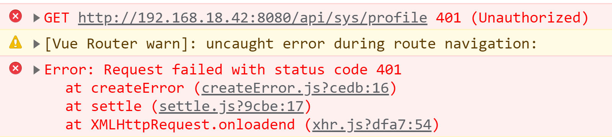
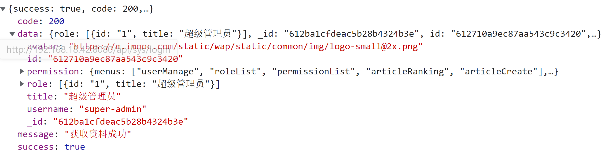

基于Vue3最新标准，实现后台前端综合解决方案
2022/10/19
posted in
Vue
2022/10/19
posted in
Vue
自从 vue 在 2020年09月18日 发布了 3.0 的版本之后，很多开发者都开始尝试被大受推崇的 Composition API ，但是在经过了短期的追捧之后，大家却发现，在企业中 Composition API 却并没有被大范围的普及，很多的公司虽然升级到了 vue 3 ，但却依然使用着 options API 语法。
追其根本，原因还是在 Composition API 所提供的 setup 函数语法 中，如果你使用 setup 函数语法 ，那么你得到的代码可能是这样的：

此时我们想要在 template 中使用一个 响应式数据，不但要通过 ref 进行声明，还需要在 setup 函数中进行 return 操作。同样方法也是如此。
那么当我们的一个项目足够复杂时，这样的一种结构形式就会变得 非常的难看 并且 难以维护
而这样的问题作为 vue 官方也是看到了的。
所以说在 vue3 仅仅发布了一个月之后，也就是在 2020年10月28 ，Vue 就提出了一个 RFC ，尝试新的方式来废弃掉这种 setup 函数式 语法。
时隔一年，在 2021年8月5日 ，伴随着 vue 3.2 的发布，vue 正式推出了全新的 composition API 语法标准 script-setup
script-setup 的推出，标记着 setup 函数式语法 正式称为过去式！
基于 script-setup 语法标准 ，我们再去实现之前的业务，代码则变成了这样：

原本 25 行的代码量被压缩到了 14 行，并且大家可以发现，现在我们可以像 写普通的 js 一样去写 vue 了
除此之外 vue3.2 版本还带来了很多其他的巨大改变，比如：
CSS 值这些新的改变，我们在开篇这里就不再赘述了
而对于后台系统而言，相信只要是前端开发的工程师，那么就不陌生了。

如图所示，根据我们之前的多次数据统计分析，在 1-5 年经验的前端开发者中，后台管理系统的项目占比为 59.62% 。为前端开发中最为重要的工作方向。
而我们本次的课程则是专门针对于这种最为重要的工作方向，抽离出其中几十个经典业务模型，争取可以制作出覆盖大家大部分后台开发业务场景的综合性解决方案。
具体业务模型有：
vue 标准的：
vue 全家桶等一揽子处理方案内容
每一小节的视频都会对应详细的图文节内容
那么到这里相信大家对本课程中的内容应该有了一个大致的了解。
总结一下，学习完本课程之后，大家可以获取到如下三点收获：
足够帮助你在 面试 或者 晋升 中脱颖而出！
因为本课程为通用的解决方案课程，所以无论是：
都可以学习本课程的内容并获取到足够的收获！
那么还在犹豫什么呢？快来一起学习吧！
标准化大厂编程规范解决方案之ESLint + Git Hooks
工欲善其事，必先利其器
对于一些大型的企业级项目而言，通常情况下我们都是需要一个团队来进行开发的。而又因为团队人员对技术理解上的参差不齐，所以就会导致出现一种情况，那就是《一个项目无法具备统一的编程规范，导致项目的代码像多个不同材质的补丁拼接起来一样》
设想一下，下面的这段代码有一个团队进行开发，因为没有具备统一的代码标准，所以生成了下面的代码：

这段代码可以正常运行没有问题，但是整体的代码结构却非常的难看。
有的地方有空格进行分割，有的地方却没有
有的地方是单引号，有的地方却是双引号
有的地方有分号，有的地方没有分号
....
这样的项目虽然可以正常运行，但是如果把它放到大厂的项目中，确实 不及格 的，它会被认为是 不可维护、不可扩展的代码内容
那么所谓的大厂标准的代码结构应该是什么样子的呢？
我们把上面的代码进行一下修正，做一个对比：

修改之后的代码具备了统一的规范之后，是不是看起来就舒服多了！
并且以上所列举出来的只是《编程规范》中的一小部分内容！
那么有些同学可能就会说了，你列举出来这些编程规范有什么用啊！
哪怕你写上一部书，我们一个团队这么多人，总不能指望所有人都看一遍，并且严格的遵守你所说的规范吧！
说的没错！指望人主动的遵守这些规范不太现实
那怎么办呢？
那么我们可不可以另辟蹊径，让程序自动处理规范化的内容呢？
答案是：可以的！
这些也是我们本章节所需要讲解的重点内容！
本章节中我们会为大家讲解，如何自动化的对代码进行规范，其中主要包括：
两大类
那么明确好了我们的范围之后，接下来就让我们创建一个项目，开始我们的代码规范之旅吧！
这一小节我们需要创建一个 vue3 的项目，而创建项目的方式依然是通过 vue-cli 进行创建。
不过这里有一点大家需要注意，因为我们需要使用最新的模板，所以请保证你的 vue-cli 的版本在 4.5.13 以上，你可以通过以下的方式来查看你的 vue-cli 版本：
vue -V
------
@vue/cli 4.5.13 // 输出版本号
如果你需要升级版本，那么可以通过以下指令进行升级：
npm update -g @vue/cli
具体的方式也可以点击 这里 进行参考。
升级之后，即可通过以下方式创建最新的 vue3 项目，终端输入 vue create 项目名称 ，即可进入 模板选择
// 利用 vue-cli 创建项目
vue create imooc-admin
// 进入模板选择
Vue CLI v4.5.13
? Please pick a preset:
Default ([Vue 2] babel, eslint)
Default (Vue 3) ([Vue 3] babel, eslint)
> Manually select features // 选择手动配置
// ----------------------------------------------------------
? Check the features needed for your project:
(*) Choose Vue version // 选择 vue 版本
(*) Babel // 使用 babel
( ) TypeScript // 不使用 ts
( ) Progressive Web App (PWA) Support // 不使用 PWA
(*) Router // 添加 vue-router
(*) Vuex // 添加 vuex
>(*) CSS Pre-processors // 使用 css 预处理器
(*) Linter / Formatter // 代码格式化
( ) Unit Testing // 不配置测试
( ) E2E Testing // // 不配置测试
// ----------------------------------------------------------
Choose a version of Vue.js that you want to start the project with
2.x
> 3.x // 选择 vue 3.0 版本
// ----------------------------------------------------------
Use history mode for router? (Requires proper server setup for index fallback in production) (Y/n) n // 不使用 history模式 的路由
// ----------------------------------------------------------
? Pick a CSS pre-processor (PostCSS, Autoprefixer and CSS Modules are supported by default):
> Sass/SCSS (with dart-sass) // 使用基于 dart-sass 的 scss 预处理器
Sass/SCSS (with node-sass)
Less
Stylus
// ----------------------------------------------------------
? Pick a linter / formatter config:
ESLint with error prevention only
ESLint + Airbnb config
> ESLint + Standard config // 使用 ESLint 标准代码格式化方案
ESLint + Prettier
// ----------------------------------------------------------
? Pick additional lint features:
(*) Lint on save //
>(*) Lint and fix on commit // 保存时 && 提交时，都进行 lint
// ----------------------------------------------------------
? Where do you prefer placing config for Babel, ESLint, etc.? (Use arrow keys)
> In dedicated config files // 单独的配置文件
In package.json
// ----------------------------------------------------------
Save this as a preset for future projects? (y/N) n // 不存储预设
等待片刻之后，你的项目就会生成成功。
生成之后，可以通过以下两个指令来运行你的项目：
cd 项目目录
npm run serve
执行成功之后，项目即可运行！
因为使用 @vue/cli-v4.5.13 版本创建的项目中，vue 的版本为 v 3.0.0 。
但是我们的项目需要使用最新的 script setup 语法，该语法在 v 3.0.0 版本中是不支持的，所以我们需要升级 vue 版本。
大家可以通过以下指令进行升级：
执行：
npm i vue@3.2.8 vue-router@4.0.11 vuex@4.0.2
升级之后，查看 package.json 得到的版本应为：
"vue": "^3.2.8",
"vue-router": "^4.0.11",
"vuex": "^4.0.2"
大厂编程规范一：代码检测工具 ESLint 你了解多少？
在我们去创建项目的时候，脚手架工具已经帮助我们安装了 ESLint 代码检测工具。
对于 ESLint 的大名，同学们或多或少的应该都听说过，只不过有些同学可能了解的多一些，有些同学了解的少一些。
那么本小节我们就先来聊一下，这个赫赫有名的代码检测工具 ESLint
首先 ESLint 是 2013年6月 创建的一个开源项目，它的目标非常简单，只有一个，那就是 提供一个插件化的 javascript 代码检测工具 ，说白了就是做 代码格式检测使用的
在咱们当前的项目中，包含一个 .eslintrc.js 文件，这个文件就是 eslint 的配置文件。
随着大家对代码格式的规范性越来越重视，eslint 也逐渐被更多的人所接收，同时也有很多大厂在原有的 eslint 规则基础之上进行了一些延伸。
我们在创建项目时，就进行过这样的选择：
? Pick a linter / formatter config:
ESLint with error prevention only // 仅包含错误的 ESLint
ESLint + Airbnb config // Airbnb 的 ESLint 延伸规则
ESLint + Standard config // 标准的 ESLint 规则
我们当前选择了 标准的 ESLint 规则 ，那么接下来我们就在该规则之下，看一看 ESLint 它的一些配置都有什么？
打开项目中的 .eslintrc.js 文件
// ESLint 配置文件遵循 commonJS 的导出规则，所导出的对象就是 ESLint 的配置对象
// 文档：https://eslint.bootcss.com/docs/user-guide/configuring
module.exports = {
// 表示当前目录即为根目录，ESLint 规则将被限制到该目录下
root: true,
// env 表示启用 ESLint 检测的环境
env: {
// 在 node 环境下启动 ESLint 检测
node: true
},
// ESLint 中基础配置需要继承的配置
extends: ["plugin:vue/vue3-essential", "@vue/standard"],
// 解析器
parserOptions: {
parser: "babel-eslint"
},
// 需要修改的启用规则及其各自的错误级别
/**
* 错误级别分为三种：
* "off" 或 0 - 关闭规则
* "warn" 或 1 - 开启规则，使用警告级别的错误：warn (不会导致程序退出)
* "error" 或 2 - 开启规则，使用错误级别的错误：error (当被触发的时候，程序会退出)
*/
rules: {
"no-console": process.env.NODE_ENV === "production" ? "warn" : "off",
"no-debugger": process.env.NODE_ENV === "production" ? "warn" : "off"
}
};
那么到这里咱们已经大致的了解了.eslintrc.js 文件，基于 ESLint 如果我们出现不符合规范的代码格式时，那么就会得到一个对应的错误。
比如：
我们可以把
Home.vue中的name属性值，由单引号改为双引号
此时，只要我们一保存代码，那么就会得到一个对应的错误

这个错误表示：
Home.vue 的第 13 行 第九列 中quotes那么想要解决这个错误，通常情况下我们有两种方式：
ESLint 的要求修改代码ESLint 的验证规则按照 ESLint 的要求修改代码：
在
Home.vue的第 13 行中把双引号改为单引号
修改 ESLint 的验证规则：
在 .eslintrc.js 文件中，新增一条验证规则
"quotes": "error" // 默认
"quotes": "warn" // 修改为警告
"quotes": "off" // 修改不校验
那么这一小节，我们了解了 vue-cli 创建 vue3 项目时，Standard config 的 ESLint 配置，并且知道了如何解决 ESLint 报错的问题。
但是一个团队中，人员的水平高低不齐，大量的 ESLint 规则校验，会让很多的开发者头疼不已，从而大大影响了项目的开发进度。
试想一下，在你去完成项目代码的同时，还需要时时刻刻注意代码的格式问题，这将是一件多么痛苦的事情！
那么有没有什么办法，既可以保证 ESLint 规则校验，又可以解决严苛的格式规则导致的影响项目进度的问题呢？
大厂编程规范二：你知道代码格式化 Prettier 吗？
在上一小节中，我们知道了 ESLint 可以让我们的代码格式变得更加规范，但是同样的它也会带来开发时编码复杂度上升的问题。
那么有没有办法既可以保证 ESLint 规则校验，又可以让开发者无需关注格式问题来进行顺畅的开发呢？
答案是：有的！
而解决这个问题的关键就是 prettier！（点击 这里 进入 prettier 中文官网！）
prettier 是什么？
VSCode 之中ESLint 标准（需要通过一些简单配置）那么这些简单配置具体指的是什么呢？
请看下一小节《ESLint 与 Prettier 配合解决代码格式问题》
ESLint 与 Prettier 配合解决代码格式问题
在上一小节中，我们提到《prettier 可以在保存代码时，让我们的代码直接符合 ESLint 标准》但是想要实现这样的功能需要进行一些配置。
那么这一小节，我们就来去完成这个功能：
在 VSCode 中安装 prettier 插件（搜索 prettier），这个插件可以帮助我们在配置 prettier 的时候获得提示

如果使用的是Webstorm，同样在插件市场中找到 Prettier插件：

启用Prettier后Webstorm这里会出现Prettier配置项，如下所示勾选即可：

在项目中新建 .prettierrc 文件，该文件为 perttier 默认配置文件
在该文件中写入如下配置：
{
// 不尾随分号
"semi": false,
// 使用单引号
"singleQuote": true,
// 多行逗号分割的语法中，最后一行不加逗号
"trailingComma": "none"
}
打开 VSCode 《设置面板》

在设置中，搜索 save ，勾选 Format On Save

至此，你即可在 VSCode 保存时，自动格式化代码！
如果使用的是Webstorm则在 .prettierrc 文件中编写相关配置：
{
"singleQuote": true,
"semi": false,
"trailingComma": "none" ,
"printWidth": 120,
"tabWidth": 4,
"endOfLine": "auto",
"editor.formatOnSave": false,
"[javascript]": {
"editor.defaultFormatter": "esbenp.prettier-vscode",
"editor.formatOnSave": true
},
"[typescript]": {
"editor.defaultFormatter": "esbenp.prettier-vscode",
"editor.formatOnSave": true
}
}
但是！ 你只做到这样还不够！
VSCode 而言，默认一个 tab 等于 4 个空格，而 ESLint 希望一个 tab 为两个空格
如果大家的 VSCode 安装了多个代码格式化工具的化
ESLint 和 prettier 之间的冲突问题
我们尝试在 Home.vue 中写入一个 created 方法，写入完成之后，打开我们的控制台我们会发现，此时代码抛出了一个 ESLint 的错误

这个错误的意思是说：created 这个方法名和后面的小括号之间，应该有一个空格！
但是当我们加入了这个空格之后，只要一保存代码，就会发现 prettier 会自动帮助我们去除掉这个空格。
那么此时的这个问题就是 prettier 和 ESLint 的冲突问题。
针对于这个问题我们想要解决也非常简单：
打开 .eslintrc.js 配置文件
在 rules 规则下，新增一条规则
'space-before-function-paren': 'off'
该规则表示关闭《方法名后增加空格》的规则
重启项目
至此我们整个的 perttier 和 ESLint 的配合使用就算是全部完成了。
在之后我们写代码的过程中，只需要保存代码，那么 perttier 就会帮助我们自动格式化代码，使其符合 ESLint 的校验规则。而无需我们手动进行更改了。
在前面我们通过 prettier + ESLint 解决了代码格式的问题，但是我们之前也说过 编程规范 指的可不仅仅只是 代码格式规范 。
除了 代码格式规范 之外，还有另外一个很重要的规范就是 git 提交规范！
在现在的项目开发中，通常情况下，我们都会通过 git 来管理项目。只要通过 git 来管理项目，那么就必然会遇到使用 git 提交代码的场景
当我们执行 git commit -m "描述信息" 的时候，我们知道此时必须添加一个描述信息。但是中华文化博大精深，不同的人去填写描述信息的时候，都会根据自己的理解来进行描述。
而很多人的描述 “天马行空” ，这样就会导致别人在看你的提交记录时，看不懂你说的什么意思？不知道你当前的这次提交到底做了什么事情？会不会存在潜在的风险？
比如说，我们来看这几条提交记录：

你能够想象得到它们经历了什么吗？
所以 git 提交规范 势在必行。
对于 git 提交规范 来说，不同的团队可能会有不同的标准，那么咱们今天就以目前使用较多的 Angular团队规范 延伸出的 Conventional Commits specification（约定式提交） 为例，来为大家详解 git 提交规范
约定式提交规范要求如下：
<type>[optional scope]: <description>
[optional body]
[optional footer(s)]
-------- 翻译 -------------
<类型>[可选 范围]: <描述>
[可选 正文]
[可选 脚注]
其中 <type> 类型，必须是一个可选的值，比如：
featfixdocs也就是说，如果要按照 约定式提交规范 来去做的化，那么你的一次提交描述应该式这个样子的：

我想大家看到这样的一个提交描述之后，心里的感觉应该和我一样是崩溃的！要是每次都这么写，写到猴年马月了！
如果你有这样的困惑，那么 ”恭喜你“ ，接下来我们将一起解决这个问题！
欲知后事如何，请看下一节《Commitizen助你规范化提交代码》
更多详细配置参考笔记：https://note.youdao.com/s/VBn9zlM6
在上一小节我们讲述了 约定式提交规范 ，我们知道如果严格安装 约定式提交规范， 来手动进行代码提交的话，那么是一件非常痛苦的事情，但是 git 提交规范的处理 又势在必行，那么怎么办呢？
你遇到的问题，也是其他人所遇到的！
经过了很多人的冥思苦想，就出现了一种叫做 git 提交规范化工具 的东西，而我们要学习的 commitizen 就是其中的佼佼者！
commitizen 仓库名为 cz-cli ，它提供了一个 git cz 的指令用于代替 git commit，简单一句话介绍它：
当你使用
commitizen进行代码提交（git commit）时，commitizen会提交你在提交时填写所有必需的提交字段！
这句话怎么解释呢？不用着急，下面我们就来安装并且使用一下 commitizen ，使用完成之后你自然就明白了这句话的意思！
全局安装Commitizen
npm install -g commitizen@4.2.4
安装并配置 cz-customizable 插件
使用 npm 下载 cz-customizable
npm i cz-customizable@6.3.0 --save-dev
添加以下配置到 package.json 中
...
"config": {
"commitizen": {
"path": "node_modules/cz-customizable"
}
}
项目根目录下创建 .cz-config.js 自定义提示文件
module.exports = {
// 可选类型
types: [
{ value: 'feat', name: 'feat: 新功能' },
{ value: 'fix', name: 'fix: 修复' },
{ value: 'docs', name: 'docs: 文档变更' },
{ value: 'style', name: 'style: 代码格式(不影响代码运行的变动)' },
{
value: 'refactor',
name: 'refactor: 重构(既不是增加feature，也不是修复bug)'
},
{ value: 'perf', name: 'perf: 性能优化' },
{ value: 'test', name: 'test: 增加测试' },
{ value: 'chore', name: 'chore: 构建过程或辅助工具的变动' },
{ value: 'revert', name: 'revert: 回退' },
{ value: 'build', name: 'build: 打包' }
],
// 消息步骤
messages: {
type: '请选择提交类型:',
customScope: '请输入修改范围(可选):',
subject: '请简要描述提交(必填):',
body: '请输入详细描述(可选):',
footer: '请输入要关闭的issue(可选):',
confirmCommit: '确认使用以上信息提交？(y/n/e/h)'
},
// 跳过问题(配置此选项后，中括号里的步骤将跳过)
// skipQuestions: ['body', 'footer'],
// subject文字长度默认是72
subjectLimit: 72
}
使用 git cz 代替 git commit
使用 git cz 代替 git commit，即可看到提示内容

那么到这里我们就已经可以使用git cz 来代替了 git commit 实现了规范化的提交诉求了，但是当前依然存在着一个问题，那就是我们必须要通过 git cz 指令才可以完成规范化提交！
那么如果有马虎的同事，它们忘记了使用 git cz 指令，直接就提交了怎么办呢？
那么有没有方式来限制这种错误的出现呢？
答案是有的！
下一节我们来看 《什么是 Git Hooks》
上一小节中我们使用了 git cz 来代替了 git commit 实现了规范化的提交诉求，但是依然存在着有人会忘记使用的问题。那么这一小节我们就来看一下这样的问题，我们应该如何去进行解决。
先来明确一下我们最终要实现的效果：我们希望当《提交描述信息》不符合 约定式提交规范 的时候，阻止当前的提交，并抛出对应的错误提示。而要实现这个目的，我们就需要先来了解一个概念，叫做 Git hooks（git 钩子 || git 回调方法）
也就是：git 在执行某个事件之前或之后进行一些其他额外的操作
而我们所期望的 阻止不合规的提交消息，那么就需要使用到 hooks 的钩子函数。
下面是我整理出来的所有的 hooks ，大家可以进行一下参考，其中加粗的是常用到的 hooks：
| Git Hook | 调用时机 | 说明 |
|---|---|---|
| pre-applypatch | git am执行前 |
|
| applypatch-msg | git am执行前 |
|
| post-applypatch | git am执行后 |
不影响git am的结果 |
| pre-commit | git commit执行前 |
可以用git commit --no-verify绕过 |
| commit-msg | git commit执行前 |
可以用git commit --no-verify绕过 |
| post-commit | git commit执行后 |
不影响git commit的结果 |
| pre-merge-commit | git merge执行前 |
可以用git merge --no-verify绕过。 |
| prepare-commit-msg | git commit执行后，编辑器打开之前 |
|
| pre-rebase | git rebase执行前 |
|
| post-checkout | git checkout或git switch执行后 |
如果不使用--no-checkout参数，则在git clone之后也会执行。 |
| post-merge | git commit执行后 |
在执行git pull时也会被调用 |
| pre-push | git push执行前 |
|
| pre-receive | git-receive-pack执行前 |
|
| update | ||
| post-receive | git-receive-pack执行后 |
不影响git-receive-pack的结果 |
| post-update | 当 git-receive-pack对 git push 作出反应并更新仓库中的引用时 |
|
| push-to-checkout | 当``git-receive-pack对git push`做出反应并更新仓库中的引用时，以及当推送试图更新当前被签出的分支且`receive.denyCurrentBranch`配置被设置为`updateInstead`时 |
|
| pre-auto-gc | git gc --auto执行前 |
|
| post-rewrite | 执行git commit --amend或git rebase时 |
|
| sendemail-validate | git send-email执行前 |
|
| fsmonitor-watchman | 配置core.fsmonitor被设置为.git/hooks/fsmonitor-watchman或.git/hooks/fsmonitor-watchmanv2时 |
|
| p4-pre-submit | git-p4 submit执行前 |
可以用git-p4 submit --no-verify绕过 |
| p4-prepare-changelist | git-p4 submit执行后，编辑器启动前 |
可以用git-p4 submit --no-verify绕过 |
| p4-changelist | git-p4 submit执行并编辑完changelist message后 |
可以用git-p4 submit --no-verify绕过 |
| p4-post-changelist | git-p4 submit执行后 |
|
| post-index-change | 索引被写入到read-cache.c do_write_locked_index后 |
PS：详细的 HOOKS介绍 可点击这里查看
整体的 hooks 非常多，当时我们其中用的比较多的其实只有两个：
| Git Hook | 调用时机 | 说明 |
|---|---|---|
| pre-commit | git commit执行前它不接受任何参数，并且在获取提交日志消息并进行提交之前被调用。脚本 git commit以非零状态退出会导致命令在创建提交之前中止。 |
可以用git commit --no-verify绕过 |
| commit-msg | git commit执行前可用于将消息规范化为某种项目标准格式。 还可用于在检查消息文件后拒绝提交。 |
可以用git commit --no-verify绕过 |
简单来说这两个钩子：
commit-msg：可以用来规范化标准格式，并且可以按需指定是否要拒绝本次提交pre-commit：会在提交前被调用，并且可以按需指定是否要拒绝本次提交而我们接下来要做的关键，就在这两个钩子上面。
在上一小节中，我们了解了 git hooks 的概念，那么接下来我们就使用 git hooks 来去校验我们的提交信息。
要完成这么个目标，那么我们需要使用两个工具：
commitlint：用于检查提交信息
husky：是git hooks工具
注意：npm 需要在 7.x 以上版本！！！！！
那么下面我们分别来去安装一下这两个工具：
安装依赖：
npm install --save-dev @commitlint/config-conventional@12.1.4 @commitlint/cli@12.1.4
创建 commitlint.config.js 文件
echo "module.exports = {extends: ['@commitlint/config-conventional']}" > commitlint.config.js
打开 commitlint.config.js ， 增加配置项（ config-conventional 默认配置点击可查看 ）：
module.exports = {
// 继承的规则
extends: ['@commitlint/config-conventional'],
// 定义规则类型
rules: {
// type 类型定义，表示 git 提交的 type 必须在以下类型范围内
'type-enum': [
2,
'always',
[
'feat', // 新功能 feature
'fix', // 修复 bug
'docs', // 文档注释
'style', // 代码格式(不影响代码运行的变动)
'refactor', // 重构(既不增加新功能，也不是修复bug)
'perf', // 性能优化
'test', // 增加测试
'chore', // 构建过程或辅助工具的变动
'revert', // 回退
'build' // 打包
]
],
// subject 大小写不做校验
'subject-case': [0]
}
}
注意：确保保存为 UTF-8 的编码格式，否则可能会出现以下错误：

接下来我们来安装 husky
安装依赖：
npm install husky@7.0.1 --save-dev
启动 hooks ， 生成 .husky 文件夹
npx husky install

在 package.json 中生成 prepare 指令（ 需要 npm > 7.0 版本 ）
npm set-script prepare "husky install"

执行 prepare 指令
npm run prepare
执行成功，提示

添加 commitlint 的 hook 到 husky中，并指令在 commit-msg 的 hooks 下执行 npx --no-install commitlint --edit "$1" 指令
npx husky add .husky/commit-msg 'npx --no-install commitlint --edit "$1"'
此时的 .husky 的文件结构

至此， 不符合规范的 commit 将不再可提交：
PS F:\xxxxxxxxxxxxxxxxxxxxx\imooc-admin> git commit -m "测试"
⧗ input: 测试
✖ subject may not be empty [subject-empty]
✖ type may not be empty [type-empty]
✖ found 2 problems, 0 warnings
ⓘ Get help: https://github.com/conventional-changelog/commitlint/#what-is-commitlint
husky - commit-msg hook exited with code 1 (error)
那么至此，我们就已经可以处理好了 强制规范化的提交要求，到现在 不符合规范的提交信息，将不可在被提交！
那么到这里我们的 规范化目标 就完成了吗？当然没有！现在我们还缺少一个 规范化的处理 ，那就是 代码格式提交规范处理！ 有同学看到这里可能说，咦！ 这个怎么看着这么眼熟啊？这个事情我们之前不是做过了吗？还需要在处理什么？
欲知后事如何，请看下一节《通过 pre-commit 处理提交时代码规范》
在 ESLint 与 Prettier 配合解决代码格式问题 的章节中，我们讲解了如何处理 本地代码格式问题。 但是这样的一个格式处理问题，他只能够在本地进行处理，并且我们还需要 手动在 VSCode 中配置自动保存 才可以。那么这样就会存在一个问题，要是有人忘记配置这个东西了怎么办呢？他把代码写的乱七八糟的直接就提交了怎么办呢？
所以我们就需要有一种方式来规避这种风险。
那么想要完成这么一个操作就需要使用 husky 配合 eslint 才可以实现。
我们期望通过 husky 监测 pre-commit 钩子，在该钩子下执行 npx eslint --ext .js,.vue src 指令来去进行相关检测：
执行 npx husky add .husky/pre-commit "npx eslint --ext .js,.vue src" 添加 commit 时的 hook （npx eslint --ext .js,.vue src 会在执行到该 hook 时运行）
该操作会生成对应文件 pre-commit：

关闭 VSCode 的自动保存操作
修改一处代码，使其不符合 ESLint 校验规则
执行 提交操作 会发现，抛出一系列的错误，代码无法提交
PS F:\xxxxxxxxxxxxxxxxxxx\imooc-admin> git commit -m 'test'
F:\xxxxxxxxxxxxxxxx\imooc-admin\src\views\Home.vue
13:9 error Strings must use singlequote quotes
✖ 1 problem (1 error, 0 warnings)
1 error and 0 warnings potentially fixable with the `--fix` option.
husky - pre-commit hook exited with code 1 (error)
想要提交代码，必须处理完成所有的错误信息
那么到这里位置，我们已经通过 pre-commit 检测到了代码的提交规范问题。
那么到这里就万事大吉了吗？
在这个世界上从来不缺的就是懒人，错误的代码格式可能会抛出很多的 ESLint 错误，让人看得头皮发麻。严重影响程序猿的幸福指数。
那么有没有办法，让程序猿在 0 配置的前提下，哪怕代码格式再乱，也可以 ”自动“ 帮助他修复对应的问题，并且完成提交呢？
你别说，还真有！
那么咱们来看下一节《lint-staged 自动修复格式错误》
在上一章中我们通过 pre-commit 处理了 检测代码的提交规范问题，当我们进行代码提交时，会检测所有的代码格式规范 。
但是这样会存在两个问题：
那么这一小节，我们就需要处理这两个问题
那么想要处理这两个问题，就需要使用另外一个插件 lint-staged ！
lint-staged 可以让你当前的代码检查 只检查本次修改更新的代码，并在出现错误的时候，自动修复并且推送
lint-staged 无需单独安装，我们生成项目时，vue-cli 已经帮助我们安装过了，所以我们直接使用就可以了
修改 package.json 配置
"lint-staged": {
"src/**/*.{js,vue}": [
"eslint --fix",
"git add"
]
}
如上配置，每次它只会在你本地 commit 之前，校验你提交的内容是否符合你本地配置的 eslint规则(这个见文档 ESLint )，校验会出现两种结果：
eslint --fix 尝试帮你自动修复，如果修复成功则会帮你把修复好的代码提交，如果失败，则会提示你错误，让你修好这个错误之后才能允许你提交代码。修改 .husky/pre-commit 文件
#!/bin/sh
. "$(dirname "$0")/_/husky.sh"
npx lint-staged
再次执行提交代码
发现 暂存区中 不符合 ESlint 的内容，被自动修复
在 vue2 中，template 只允许存在一个根元素，但是这种情况在 vue3 里发生了一些变化。在 Vue3 中开始支持 template 存在多个根元素了。但是因为 VSCode 中的一些插件没有及时更新，所以当你在 template 中写入多个根元素时，有可能会出现以下的错误：

出现这个问题的原因主要是： vetur 这个 vsCode 插件依然按照 vue2 的单一根元素逻辑进行检测，所以会出现提示错误的问题。
但是大家要注意，虽然这样不太好看，但是 该问题并不影响代码运行！ 如果你实在觉得这样太丑的话，那么可以通过以下方案来 取消 vetur 对 template 的检测：
在 VSCode 的设置中，搜索 vetur，找到如下设置，取消勾选

重启 VSCode
按以上两种方式执行之后，你的多根元素就不会出现不好看的错误了

本章中我们处理了 编程格式规范的问题，整个规范大体可以分为两大类：
git 提交规范代码格式规范：
对于 代码格式规范 而言，我们通过 ESLint + Prettier + VSCode 配置 配合进行了处理。
最终达到了在保存代码时，自动规范化代码格式的目的。
git 提交规范：
对于 git 提交规范 而言我们使用了 husky 来监测 Git hooks 钩子，并且通过以下插件完成了对应的配置：
pre-commit： git hooks 钩子那么处理完成这些规范操作之后，在下一章我们将会正式进入到咱们的项目开发之中！
项目架构之搭建登录架构解决方案与实现。
在上一章中，我们处理了基本的编码规范，那么接下来我们就可以实现对应的项目开发了。
那么在之后的项目开发中，我们将会使用最新的 vue3 script setup 语法。
所以说在本章节中我们需要做两件事情：
vue3 最新特性及最新语法
登录功能开发
不过大家放心，我们不会把大量的时间花费到 枯燥的语法学习之中，而是会在实际的项目开发中和大家一起逐渐深入学习 script setup 语法，毕竟 学以致用 才是我们遵循的唯一目标。
那么明确好了我们接下来要做的事情之后，咱们就开始新的篇章吧！
想要进行项目的开发，那么首先我们需要先去了解一下 vue3 项目的初始结构
在这里我们把它和 vue2 的项目进行对比来去说明
main.js
createApp 方法来来构建 vue 实例vue实例.use 方法来挂载插件（router、vuex）Vue 构造方法，无法再挂载原型 import { createApp } from 'vue'
import App from './App.vue'
import router from './router'
import store from './store'
createApp(App).use(store).use(router).mount('#app')
App.vue
tempaltescriptstyle<template> 标签中支持多个根标签store/index.js
createStore 方法来来构建 store 实例Vue.use(Vuex) 的形式进行挂载 import { createStore } from 'vuex'
export default createStore({
state: {
},
getters: {
},
mutations: {
},
actions: {
},
modules: {
}
})
router/index.js
createRouter 方法来构建 router 实例createWebHashHistory 方法来创建 hash 模式对象，进行路由模式指定Vue.use(VueRouter) 的形式进行挂载routes 路由表的定义无差别 import { createRouter, createWebHashHistory } from 'vue-router'
import HomeView from '../views/HomeView.vue'
const routes = [
{
path: '/',
name: 'home',
component: HomeView
},
{
path: '/about',
name: 'about',
// route level code-splitting
// this generates a separate chunk (about.[hash].js) for this route
// which is lazy-loaded when the route is visited.
component: () => import(/* webpackChunkName: "about" */ '../views/AboutView.vue')
}
]
const router = createRouter({
history: createWebHashHistory(),
routes
})
export default router
综上所述，在 vue3 的初始化项目中，与 vue2 对比的最大差异其实就是两点：
vue3 使用 按需导入的形式 进行初始化操作<template> 标签中支持多个根标签那么这一小节我们主要了解了 vue3 项目的初始结构，通过了解我们也可以发现现在的项目中，存在很多的 无用代码，那么下一小节我们就需要 删除掉这些无用的默认代码，也就是进行 初始化项目 操作。
@vue/cli 在帮助我们创建项目的同时，也生成了很多无用的代码，那么这一小节我们需要去除掉这些无用的代码。
去除的方式如下所示：
App.vue 初始化代码如下：
<template>
<router-view />
</template>
<style lang="scss"></style>
删除 views 文件夹下的所有 .vue 文件
删除 components 文件夹下的所有 .vue 文件
router/index.js 中初始化代码如下：
import { createRouter, createWebHashHistory } from 'vue-router'
const routes = []
const router = createRouter({
history: createWebHashHistory(),
routes
})
export default router
浏览器中重新访问你的应用，得到如下页面即可：

在开始本小节的内容之前，我必须要先声明一点：
我们不会在课程中专门开辟出一段内容讲解 vue3 的知识。而是会在项目开发的过程中，通过实际场景逐步解锁对应的知识点，以达到学以致用的目的！
所以说本小节的 vue3 新特性介绍 ，我们只会概述性的来介绍一下 vue3 中新增的主要内容。
那么明确好了我们的目标之后，vue3 中到底新增了哪些比较核心的东西呢？：
composition APIProxy 代替 Object.defineProperty() 实现响应式TS 支持vite想要了解 组合式 API，那么首先我们需要先了解 options API，也就是 vue2 中的开发形式。
vue2 中的开发形式被称为 options API，options API 存在
等一些特点，但是也存在着一些问题。
而其中最主要的一个问题就是：当你的组件变得越来越复杂时，组件的可读性会变得越来越差。
不知道大家有没有遇到过一种情况，那就是：你在完成一个组件代码时，总是需要不停的上下滚动滚轮，来查看 data 、methods、computed 之间的配合使用，就像下面一样

这个截图中的代码大家不需要深究。
在这个动图中我们定义的两个数据 optionsData 和 selectOption，然后我们在多个方法中都使用到了它们，但是大家可以发现，我们在使用或查看的过程中，得一直不停的翻动页面！
因为我们的整体组件代码结构是这样的：

定义数据与使用数据被分割在组件的各个位置，导致我们需要不断地翻滚页面来查看具体的业务逻辑！
并且这种现象随着组件越来越复杂，这种情况会变得越来越严重！
而这个就是 options API 所存在的问题：当你的组件变得越来越复杂时，组件的可读性会变得越来越差。
而 Composition API 所期望解决的就是这么一个问题

把定义数据与使用数据的逻辑放在一起进行处理，以达到更加易读，更加方便扩展的目的！
那么具体怎么去做的，我们会在后面的课程中通过最新的 RFC -> script setup 语法为大家进行解读。
Proxy 代替 Object.defineProperty() 实现响应式在 vue 2 的文档中 有这么一段话：
由于 JavaScript 的限制，Vue 不能检测数组和对象的变化。
这里所谓的 JavaScript 的限制，所指的就是 Object.defineProperty() 的限制。
因为 Object.defineProperty() 是通过：为对象属性指定描述符 的方式来监听 对象中某个属性的 get 和 set。
所以在以下两种情况下，新的属性是 非响应式的：
对于对象：
var vm = new Vue({
data:{
a:1
}
})
// `vm.a` 是响应式的
vm.b = 2
// `vm.b` 是非响应式的
对于数组：
var vm = new Vue({
data: {
items: ['a', 'b', 'c']
}
})
vm.items[1] = 'x' // 不是响应性的
vm.items.length = 2 // 不是响应性的
这也是为什么会存在 Vue.set 这个 API 的原因。
但是，这样的一种情况其实一直都是不合理的，因为这只是无意义的增加了复杂度而已，但是一直以来因为 Object.defineProperty() 这个 API 本身的限制，所以一直无法处理。
直到 Proxy 被广泛支持，这种情况才发生了变化。
Proxy 用于：为对象创建一个代理，从而实现基本操作的拦截。 那么这样就从根本上解决了 Object.defineProperty() 所面临的那么两个问题。这也是为什么 vue3 中不再有 Vue.set 方法的原因。
关于 proxy 的详细介绍，大家可以查看这一篇博客 Vue 3 深入响应式原理 - 聊一聊响应式构建的那些经历，在视频中，我们就不过多赘述了
vue 被称为是 渐进式框架，就是因为，对于 vue 而言，它不仅仅只有 vue.js 这一个核心库，还有其他的比如 vue-router，vuex 等一些周边库。这些周边库和 vue.js 一起共同组成了 vue 。
所以说当 vue3 发布之后，vue-router、vuex 等全家桶也迎来了一波更新。在前面的 vue3 项目结构解析 这一小节，大家应该也能看到对应的代码变化。
那么关于全家桶的更新内容，我们会在后面的课程中进行详细的讲解，所以就不在这里进行赘述了。
TS 支持vue 3 使用 TypeScript 进行了重构，其目的是 为了防止随着应用的增长，而产生的许多潜在的运行时静态类型的错误 。同时这也意味着以后在 vue 中使用 TypeScript 不再需要其他的任何工具。
但是有一点我需要提醒大家，虽然 vue 对 TypeScript 进行全面支持，这并不代表我们应该在任何情况下都无条件的使用 TypeScript（后面我们简称 TypeScript 为 TS）。
TS 的优势主要在于 静态类型检查和环境声明，但同时它也会为你的项目增加复杂度。如果你的项目需要使用到以上两点，那么我推荐你使用 TS 。否则只是增加了无谓的复杂度而已。
决定我们应该使用哪种技术的唯一条件，就是我们的目标。 我们需要做的是在可以 完成目标 的基础上，寻找最简单的实现方案。
所以，基于以上原因，我们项目中并没有使用 TS 进行项目的开发。如果在后续的过程中，发现大家有这方面的需要，那么我会考虑专门针对 TS 的特性来开发一个对应的项目。
最后就是一个新的打包工具 vite，vite 严格来说不能算是 vue3 的内容，只不过它跟随 vue3 进行了发布所以我们这里就把它算到了新特性里面。
vite 的作用其实和 webpack 是一样的，都是一个 前端构建工具。它区别于 webpack 的地方在于它完全使用了 ES Module 的特性，可以无需预先打包，而是采用实时编译的方式。这样让它具备了远高于 webpack 的启动速度和热更新速度。
但是 成也萧何，败也萧何 因为 vite 完全依赖 ES Module 就导致了 它无法直接对 commonJS 的模块化方式进行支持，必须得采用 依赖预构建 的形式。
目前 vite 还不够稳定到足够支持商用，所以如果大家只是想要尝鲜，那么没有问题。如果大家希望创建一个商用的大型项目，那么个人还是推荐更加成熟的 webpack 方案。
而我们当前的项目旨在构建一个 后台前端解决方案系统，所以我们这里依然选择了 webpack ，而不是 vite。
如果大家使用过 早期的 composition API ，那么应该会对 setup 函数 感触颇深，它的语法是反人类的。
所以在 vue3 正式发布 40天 之后， 也就是 2020年10月28日 （vue3 正式发布日期为 2020年9月18日）提出了新的 script setup 提案，该提案的目的只有一个：那就是让大家可以更爽的使用 composition API 语法！
该提案在 2021年8月9日 正式定稿，并伴随着最新的 vue3 版本进行了发布，这也是为什么前面我们需要升级到最新的 vue 版本的原因。
下面两张截图为对比 原setup函数 与 script setup：
原 setup函数。
变量和方法都需要先定义，然后 return，当页面比较复杂是 setup 函数会比较庞大。
script setup
在 script 标签上加上 setup 关键字，script 标签里边就不需要再使用 setup 函数了，并且变量和方法都不需要return，即“所见即所得“。

从截图中可以看出 script setup 语法更加符合我们开发者书写 JS 代码的习惯，它让我们书写 vue 就像再写普通的 js 一样。
所以以后的 composition API 将是 script setup 语法的时代，原setup函数 将会逐渐退出历史舞台。而我们的项目也将会全部使用最新的 script setup 语法，让大家紧抓时代脉搏！
在开发我们的项目之前，我们需要先去导入 element-ui 的 vue3 支持版本，也就是 element-plus
element-plus 提供了快捷导入的方式，即：vue-cli-plugin-element-plus，大家可以通过以下方式来快捷导入 element-plus （注意：此种方式会自动修改 App.vue 文件）：
在通过 vue-cli 创建的项目中，执行
vue add element-plus
选择全局导入

暂不生成覆盖变量的 scss 文件

选择简体中文即可

出现该提示表示安装完成

此时运行项目，则会得到如下错误

出现该错误的原因是因为 vue-cli-plugin-element-plus 默认修改了 APP.vue 文件，导入了 HelloWorld
所以我们需要到 APP.vue 中，初始化如下代码：
<template>
<router-view />
</template>
<script>
export default {
name: 'App'
}
</script>
<style></style>
那么至此，element-plus 导入成功，下一小节我们就正式开始项目的开发工作吧！
在 views 中 login 文件夹，创建 index.vue 文件

在 router/index.js 中增加以下路由配置
/**
* 公开路由表
*/
const publicRoutes = [
{
path: '/login',
component: () => import('@/views/login/index')
}
]
const router = createRouter({
history: createWebHashHistory(),
routes: publicRoutes
})
在 login/index.vue 中，生成基本页面结构
<template>
<div class=""></div>
</template>
<script setup>
import {} from 'vue'
</script>
<style lang="scss" scoped></style>
创建登录页面基本结构
<template>
<div class="login-container">
<el-form class="login-form" >
<div class="title-container">
<h3 class="title">用户登录</h3>
</div>
<el-form-item prop="username">
<span class="svg-container">
<el-icon>
<avatar />
</el-icon>
</span>
<el-input
placeholder="username"
name="username"
type="text"
/>
</el-form-item>
<el-form-item prop="password">
<span class="svg-container">
<el-icon>
<avatar />
</el-icon>
</span>
<el-input
placeholder="password"
name="password"
/>
<span class="show-pwd">
<el-icon>
<avatar />
</el-icon>
</span>
</el-form-item>
<el-button type="primary" style="width: 100%; margin-bottom: 30px"
>登录</el-button
>
</el-form>
</div>
</template>
<script setup>
// 导入组件之后无需注册可直接使用，但是首先要安装，参考：https://element-plus.gitee.io/zh-CN/component/icon.html
import { Avatar } from '@element-plus/icons'
import {} from 'vue'
</script>
创建全局的 style
在 src 下创建 styles/index.scss 文件，并写入以下内容：
html,
body {
height: 100%;
margin: 0;
padding: 0;
-moz-osx-font-smoothing: grayscale;
-webkit-font-smoothing: antialiased;
text-rendering: optimizeLegibility;
font-family: Helvetica Neue, Helvetica, PingFang SC, Hiragino Sans GB,
Microsoft YaHei, Arial, sans-serif;
}
#app {
height: 100%;
}
*,
*:before,
*:after {
box-sizing: inherit;
margin: 0;
padding: 0;
}
a:focus,
a:active {
outline: none;
}
a,
a:focus,
a:hover {
cursor: pointer;
color: inherit;
text-decoration: none;
}
div:focus {
outline: none;
}
.clearfix {
&:after {
visibility: hidden;
display: block;
font-size: 0;
content: ' ';
clear: both;
height: 0;
}
}
在 main.js 中导入全局样式
...
// 导入全局样式
import './styles/index.scss'
...
在 views/login/index.vue 中写入以下样式
<style lang="scss" scoped>
$bg: #2d3a4b;
$dark_gray: #889aa4;
$light_gray: #eee;
$cursor: #fff;
.login-container {
min-height: 100%;
width: 100%;
background-color: $bg;
overflow: hidden;
.login-form {
position: relative;
width: 520px;
max-width: 100%;
padding: 160px 35px 0;
margin: 0 auto;
overflow: hidden;
::v-deep .el-form-item {
border: 1px solid rgba(255, 255, 255, 0.1);
background: rgba(0, 0, 0, 0.1);
border-radius: 5px;
color: #454545;
}
::v-deep .el-input {
display: inline-block;
height: 47px;
width: 85%;
input {
background: transparent;
border: 0px;
-webkit-appearance: none;
border-radius: 0px;
padding: 12px 5px 12px 15px;
color: $light_gray;
height: 47px;
caret-color: $cursor;
}
}
}
.svg-container {
padding: 6px 5px 6px 15px;
color: $dark_gray;
vertical-align: middle;
display: inline-block;
}
.title-container {
position: relative;
.title {
font-size: 26px;
color: $light_gray;
margin: 0px auto 40px auto;
text-align: center;
font-weight: bold;
}
}
.show-pwd {
position: absolute;
right: 10px;
top: 7px;
font-size: 16px;
color: $dark_gray;
cursor: pointer;
user-select: none;
}
}
</style>
在上一小节中我们完成了登陆页面的基本样式 。但是现在在登录页面中，还存在着最后一个样式问题，那就是 icon 图标。
在我们的项目中所使用的 icon 图标，一共分为两类：
element-plus 的图标svg 图标这也是通常情况下企业级项目开发时，所遇到的一种常见情况。
对于 element-plus 的图标我们可以直接通过 el-icon 来进行显示，但是自定义图标的话，我们暂时还缺少显示的方式，所以说我们需要一个自定义的组件，来显示我们自定义的 svg 图标。
那么这种自定义组件处理 自定义 svg 图标的形式，就是我们在面临这种问题时的通用解决方案。
那么对于这个组件的话，它就需要拥有两种能力：
svg 图标svg 图标基于以上概念，我们可以创建出以下对应代码：
关于mask
创建 components/SvgIcon/index.vue：
<template>
<div
v-if="isExternal"
:style="styleExternalIcon"
class="svg-external-icon svg-icon"
:class="className"
/>
<svg v-else class="svg-icon" :class="className" aria-hidden="true">
<use :xlink:href="iconName" />
</svg>
</template>
<script setup>
import { isExternal as external } from '@/utils/validate'
import { defineProps, computed } from 'vue'
const props = defineProps({
// icon 图标
icon: {
type: String,
required: true
},
// 图标类名
className: {
type: String,
default: ''
}
})
/**
* 判断是否为外部图标
*/
const isExternal = computed(() => external(props.icon))
/**
* 外部图标样式
*/
const styleExternalIcon = computed(() => ({
mask: `url(${props.icon}) no-repeat 50% 50%`,
'-webkit-mask': `url(${props.icon}) no-repeat 50% 50%`
}))
/**
* 项目内图标
*/
const iconName = computed(() => `#icon-${props.icon}`)
</script>
<style scoped>
.svg-icon {
width: 1em;
height: 1em;
vertical-align: -0.15em;
fill: currentColor;
overflow: hidden;
}
.svg-external-icon {
background-color: currentColor;
mask-size: cover !important;
display: inline-block;
}
</style>
创建 utils/validate.js：
/**
* 判断是否为外部资源
*/
export function isExternal(path) {
return /^(https?:|mailto:|tel:)/.test(path)
}
在 views/login/index.vue 中使用 外部 svg （https://res.lgdsunday.club/user.svg）：
<span class="svg-container">
<svg-icon icon="https://res.lgdsunday.club/user.svg"></svg-icon>
</span>
外部图标可正常展示。
那么在本小节中，我们创建了 SvgIcon 组件，用来处理了 外部图标 的展示，但是对于内部图标而言，我们此时依然无法进行展示。所以在下一小节中，我们就需要看一下，如何处理内部的 svg 图标。
在上一章中，我们创建了 SvgIcon 组件用于显示 非 Element-ui 的图标。但是目前我们只处理了 外部 svg 的图标展示，内部的图标还无法展示。
所以这一小节，我们就需要处理 内部的 svg 图标展示。
首先导入所有的 svg 图标（大家可以从 讲师源代码 -> src -> icons -> svg 处，获取所有 svg 图标），导入到 src -> icons -> svg 处
在 icons 下创建 index.js 文件，该文件中需要完成两件事情：
svg 图标SvgIcon 的全局注册得出以下代码：
import SvgIcon from '@/components/SvgIcon'
// https://webpack.docschina.org/guides/dependency-management/#requirecontext
// 通过 require.context() 函数来创建自己的 context
const svgRequire = require.context('./svg', false, /\.svg$/)
// 此时返回一个 require 的函数，可以接受一个 request 的参数，用于 require 的导入。
// 该函数提供了三个属性，可以通过 require.keys() 获取到所有的 svg 图标
// 遍历图标，把图标作为 request 传入到 require 导入函数中，完成本地 svg 图标的导入
svgRequire.keys().forEach(svgIcon => svgRequire(svgIcon))
export default app => {
app.component('svg-icon', SvgIcon)
}
在 main.js 中引入该文件
...
// 导入 svgIcon
import installIcons from '@/icons'
...
installIcons(app)
...
删除 views/login 下 局部导入 SvgIcon 的代码
在 login/index.vue 中使用 SvgIcon 引入本地 svg
// 用户名
<svg-icon icon="user" />
// 密码
<svg-icon icon="password" />
// 眼睛
<svg-icon icon="eye" />
此时 处理内容 svg 图标的代码 已经完成
打开浏览器，我们发现 图标依然无法展示！ 这又是因为什么原因呢？
来看下一节 《使用 svg-sprite-loader 处理 svg 图标》
svg-sprite-loader 是 webpack 中专门用来处理 svg 图标的一个 loader ，在上一节中我们的图标之所有没有展示，就是因为我们缺少该 loader。
那么想要使用该 loader 我们需要做两件事情：
下载该 laoder，执行：npm i --save-dev svg-sprite-loader@6.0.9
创建 vue.config.js 文件，新增如下配置：
const path = require('path')
function resolve(dir) {
return path.join(__dirname, dir)
}
// https://cli.vuejs.org/zh/guide/webpack.html#简单的配置方式
module.exports = {
chainWebpack(config) {
// 设置 svg-sprite-loader
config.module
.rule('svg')
.exclude.add(resolve('src/icons')) // 排除掉其他loader对svg处理
.end()
config.module
.rule('icons')
.test(/\.svg$/)
.include.add(resolve('src/icons'))
.end()
.use('svg-sprite-loader')
.loader('svg-sprite-loader')
.options({
symbolId: 'icon-[name]'
})
.end()
}
}
// 补充，如果是直接配置 webpack。https://blog.csdn.net/codfishXY/article/details/119170583
{
test: /\.(png|jpe?g|gif|svg|cur)(\?.*)?$/,
loader: 'file-loader',
exclude: [resolve('src/icons')], //添加此行
options: {
esModule: false,
name: 'images/[name].[ext]?[hash]'
}
},
{
test: /\.svg$/,
loader: 'svg-sprite-loader',
include: [resolve('src/icons')],
options: {
symbolId: 'icon-[name]'
}
}
处理完以上配置之后，重新启动项目，图标即可显示！
在处理好了 SvgIcon 图标之后，接下来我们就需要处理登陆页面的逻辑问题了。不过在处理这个逻辑之前，我们需要先来明确一点 vue3 新的更新内容。
如果大家之前有过了解 Vue3 代码的话，那么会知道 Vue3 中声明响应式数据的方式有两种：
对于这两种使用方式而言，它们在应用层上并没有明确的界限，也就是说我们可能很难仅通过官网的介绍来判断我应该在什么情况下使用什么。
但是这种情况在现在已经不存在了。
2020年10月29日，社区大佬 basvanmeurs 提出了一个新的 PR，大概的意思是说：他重构了响应式的部分内容，大大增加了性能。
详细的介绍如下：
- Big runtime performance improvement for ref, computed, watch and watchEffect (30%-80% depending on the amount of dependencies)
- Memory usage decreased by about 30% when creating ref, computed, watch and watchEffect
- Creation time performance improvement, most notably for watchers and watchEffects
ref、calculated、watch 和 watchEffect 的运行时性能大幅提升（30%-80% 取决于依赖项的数量）
创建 ref、calculated、watch 和 watchEffect 时内存使用量减少了约 30%
创建时间性能改进，最显著的是 watchers 和 watchEffects
这是一个非常强大的变化，同时又因为这个变化过于庞大，所以一直等待到 2021年8月5日 伴随着 vue 3.2发布，尤大才合并对应的代码，并在这次变化中对该性能改进进行了如下的介绍：
- More efficient ref implementation (~260% faster read / ~50% faster write)
- ~40% faster dependency tracking
- ~17% less memory usage
更高效的 ref 实现（约 260% 的读取速度/约 50% 的写入速度）
依赖项跟踪速度提高约 40%
内存使用量减少约 17%
毫无疑问，这绝对是一个伟大的变化。
那么针对于这个变化，在应用层中最大的体现就是 ref 这个 API ，性能得到了大幅度的提升。
所以说，拥抱新的变化吧！
在之后能使用 ref 的地方就使用 ref 吧。毕竟现在它的性能得到了大幅的提升！
那么在咱们之后的代码中，我们同样也会全部使用 ref 来作为响应式数据构建的方式，无论是 基本数据类型 或者是 复杂数据类型， 毕竟这样做本身并没有什么问题，对不对？
表单校验是表单使用的一个通用能力，在 element-plus 中想要为表单进行表单校验那么我们需要关注以下三点：
el-form 绑定 model 属性el-form 绑定 rules 属性el-form-item 绑定 prop 属性保证以上三点即可为 el-from 添加表单校验功能。
因为这一块是比较简单的功能，只要有过 element-ui 使用经验的同学，应该对这里都不陌生，所以这里就不对这块内容进行过多赘述了。对这里不是很了解的同学可以参考下 element-plus 中 from 表单部分
以下为对应的代码实现：
views/login
<template>
<div class="login-container">
<el-form class="login-form" :model="loginForm" :rules="loginRules">
...
<el-form-item prop="username">
...
<el-input
...
v-model="loginForm.username"
/>
</el-form-item>
<el-form-item prop="password">
...
<el-input
...
v-model="loginForm.password"
/>
...
</el-form-item>
...
</el-form>
</div>
</template>
<script setup>
import { ref } from 'vue'
import { validatePassword } from './rules'
// 数据源
const loginForm = ref({
username: 'super-admin',
password: '123456'
})
// 验证规则
const loginRules = ref({
username: [
{
required: true,
trigger: 'blur',
message: '用户名为必填项'
}
],
password: [
{
required: true,
trigger: 'blur',
validator: validatePassword()
}
]
})
</script>
views/login/rules.js
export const validatePassword = () => {
return (rule, value, callback) => {
if (value.length < 6) {
callback(new Error('密码不能少于6位'))
} else {
callback()
}
}
}
对于密码框存在两种状态：
点击 眼睛 可以进行切换。
该功能实现为通用的处理方案，只需要动态修改 input 的 type 类型即可，其中：
password 为密文显示text 为明文显示根据以上理论，即可得出以下代码：
<template>
<div class="login-container">
<el-form class="login-form" :model="loginForm" :rules="loginRules">
...
<el-input
...
:type="passwordType"
/>
<span class="show-pwd" @click="onChangePwdType">
<svg-icon :icon="passwordType === 'password' ? 'eye' : 'eye-open'" />
</span>
...
</el-form>
</div>
</template>
<script setup>
import { ref } from 'vue'
...
// 处理密码框文本显示状态
const passwordType = ref('password')
const onChangePwdType = () => {
if (passwordType.value === 'password') {
passwordType.value = 'text'
} else {
passwordType.value = 'password'
}
}
</script>
处理完了表单的基本操作之后，接下来就是登录操作的实现了。
对于登录操作在后台项目中是一个通用的解决方案，具体可以分为以下几点：
axios 模块token这些内容就共同的组成了一套 后台登录解决方案 。那么在后面的章节中，我们就分别来去处理这些内容。
首先我们先去完成第一步：封装 axios 模块。
在当前这个场景下，我们希望封装出来的 axios 模块，至少需要具备一种能力，那就是：根据当前模式的不同，设定不同的 BaseUrl ，因为通常情况下企业级项目在 开发状态 和 生产状态 下它的 baseUrl 是不同的。
对于 @vue/cli 来说，它具备三种不同的模式：
developmenttestproduction具体可以点击 这里 进行参考。
根据我们前面所提到的 开发状态和生产状态 那么此时我们的 axios 必须要满足：在 开发 || 生产 状态下，可以设定不同 BaseUrl 的能力
那么想要解决这个问题，就必须要使用到 @vue/cli 所提供的 环境变量 来去进行实现。
我们可以在项目中创建两个文件：
.env.development.env.production它们分别对应 开发状态 和 生产状态。
我们可以在上面两个文件中分别写入以下代码：
.env.development：
# 标志
ENV = 'development'
# base api
VUE_APP_BASE_API = '/api'
.env.production：
# 标志
ENV = 'production'
# base api
VUE_APP_BASE_API = '/prod-api'
有了这两个文件之后，我们就可以创建对应的 axios 模块
创建 utils/request.js ，写入如下代码：
import axios from 'axios'
const service = axios.create({
baseURL: process.env.VUE_APP_BASE_API,
timeout: 5000
})
export default service
有了 axios 模块之后，接下来我们就可以
封装接口请求模块：
创建 api 文件夹，创建 sys.js：
import request from '@/utils/request'
/**
* 登录
*/
export const login = data => {
return request({
url: '/sys/login',
method: 'POST',
data
})
}
封装登录请求动作：
该动作我们期望把它封装到 vuex 的 action 中
在 store 下创建 modules 文件夹，创建 user.js 模块，用于处理所有和 用户相关 的内容（此处需要使用第三方包 md5 ）：
import { login } from '@/api/sys'
import md5 from 'md5'
export default {
namespaced: true,
state: () => ({}),
mutations: {},
actions: {
login(context, userInfo) {
const { username, password } = userInfo
return new Promise((resolve, reject) => {
login({
username,
password: md5(password)
})
.then(data => {
resolve()
})
.catch(err => {
reject(err)
})
})
}
}
}
在 store/index 中完成注册：
import { createStore } from 'vuex'
import user from './modules/user.js'
export default createStore({
modules: {
user
}
})
在 login 中，触发定义的 action
<template>
<el-button
type="primary"
style="width: 100%; margin-bottom: 30px"
:loading="loading"
@click="handleLogin"
>登录</el-button
>
</template>
<script setup>
import { ref } from 'vue'
import { validatePassword } from './rules'
import { useStore } from 'vuex'
...
// 登录动作处理
const loading = ref(false)
const loginFromRef = ref(null)
const store = useStore()
const handleLogin = () => {
loginFromRef.value.validate(valid => {
if (!valid) return
loading.value = true
store
.dispatch('user/login', loginForm.value)
.then(() => {
loading.value = false
// TODO: 登录后操作
})
.catch(err => {
console.log(err)
loading.value = false
})
})
}
</script>
触发之后会得到以下错误：

该错误表示，我们当前请求的接口不存在。
出现这个问题的原因，是因为我们在前面配置环境变量时指定了 开发环境下，请求的 BaseUrl 为 /api ，所以我们真实发出的请求为：/api/sys/login 。
这样的一个请求会被自动键入到当前前端所在的服务中，所以我们最终就得到了 http://192.168.18.42:8081/api/sys/login 这样的一个请求路径。
而想要处理这个问题，那么可以通过指定 webpack DevServer 代理 的形式，代理当前的 url 请求。
而指定这个代理非常简单，是一种近乎固定的配置方案。
在 vue.config.js 中，加入以下代码：
module.exports = {
devServer: {
// 配置反向代理
proxy: {
// 当地址中有/api的时候会触发代理机制
'/api': {
// 要代理的服务器地址 这里不用写 api
target: 'https://api.imooc-admin.lgdsunday.club/',
changeOrigin: true // 是否跨域
}
}
},
...
}
重新启动服务，再次进行请求，即可得到返回数据


通常情况下，在获取到 token 之后，我们会把 token 进行缓存，而缓存的方式将会分为两种：
LocalStorageVuex保存在 LocalStorage 是为了方便实现 自动登录功能
保存在 vuex 中是为了后面在其他位置进行使用
那么下面我们就分别来实现对应的缓存方案：
LocalStorage：
创建 utils/storage.js 文件，封装三个对应方法：
/**
* 存储数据
*/
export const setItem = (key, value) => {
// 将数组、对象类型的数据转化为 JSON 字符串进行存储
if (typeof value === 'object') {
value = JSON.stringify(value)
}
window.localStorage.setItem(key, value)
}
/**
* 获取数据
*/
export const getItem = key => {
const data = window.localStorage.getItem(key)
try {
return JSON.parse(data)
} catch (err) {
return data
}
}
/**
* 删除数据
*/
export const removeItem = key => {
window.localStorage.removeItem(key)
}
/**
* 删除所有数据
*/
export const removeAllItem = key => {
window.localStorage.clear()
}
在 vuex 的 user 模块下，处理 token 的保存
import { login } from '@/api/sys'
import md5 from 'md5'
import { setItem, getItem } from '@/utils/storage'
import { TOKEN } from '@/constant'
export default {
namespaced: true,
state: () => ({
token: getItem(TOKEN) || ''
}),
mutations: {
setToken(state, token) {
state.token = token
setItem(TOKEN, token)
}
},
actions: {
login(context, userInfo) {
...
.then(data => {
this.commit('user/setToken', data.data.data.token)
resolve()
})
...
})
}
}
}
处理保存的过程中，需要创建 constant 常量目录 constant/index.js
export const TOKEN = 'token'
此时，当点击登陆时，即可把 token 保存至 vuex 与 localStorage 中
在上一小节中，我们保存了服务端返回的 token 。但是有一个地方比较难受，那就是在 vuex 的 user 模块 中，我们获取数据端的 token 数据，通过 data.data.data.token 的形式进行获取。
一路的 data. 确实让人比较难受，如果有过 axios 拦截器处理经验的同学应该知道，对于这种问题，我们可以通过 axios 响应拦截器 进行处理。
在 utils/request.js 中实现以下代码：
import axios from 'axios'
import { ElMessage } from 'element-plus'
...
// 响应拦截器
service.interceptors.response.use(
response => {
const { success, message, data } = response.data
// 要根据success的成功与否决定下面的操作
if (success) {
return data
} else {
// 业务错误
ElMessage.error(message) // 提示错误消息
return Promise.reject(new Error(message))
}
},
error => {
// TODO: 将来处理 token 超时问题
ElMessage.error(error.message) // 提示错误信息
return Promise.reject(error)
}
)
export default service
此时，对于 vuex 中的 user 模块 就可以进行以下修改了：
this.commit('user/setToken', data.token)
那么截止到此时，我们距离登录操作还差最后一个功能就是 登录鉴权 。
只不过在进行 登录鉴权 之前我们得先去创建一个登录后的页面，也就是我们所说的登录后操作。
创建 layout/index.vue ，写入以下代码：
<template>
<div class="">Layout 页面</div>
</template>
<script setup>
import {} from 'vue'
</script>
<style lang="scss" scoped></style>
在 router/index 中，指定对应路由表：
const publicRoutes = [
...
{
path: '/',
component: () => import('@/layout/index')
}
]
在登录成功后，完成跳转
// 登录后操作
router.push('/')
在处理了登陆后操作之后，接下来我们就来看一下最后的一个功能，也就是 登录鉴权
首先我们先去对 登录鉴权 进行一个定义，什么是 登录鉴权 呢？
当用户未登陆时，不允许进入除
login之外的其他页面。用户登录后，
token未过期之前，不允许进入login页面
而想要实现这个功能，那么最好的方式就是通过Vue Router4.0 导航守卫 来进行实现。
那么明确好了 登录鉴权 的概念之后，接下来就可以去实现一下
在 main.js 平级，创建 permission 文件并导入
// main.js 中导入路由鉴权文件
import './permission'
permission.js 核心代码：
import router from './router'
import store from './store'
// 白名单
const whiteList = ['/login']
/**
* 路由前置守卫
*/
router.beforeEach(async (to, from, next) => {
// 存在 token ，进入主页
// if (store.state.user.token) {
// 快捷访问
if (store.getters.token) {
if (to.path === '/login') {
next('/')
} else {
next()
}
} else {
// 没有token的情况下，可以进入白名单
if (whiteList.indexOf(to.path) > -1) {
next()
} else {
next('/login')
}
}
})
在此处我们使用到了 vuex 中的 getters ，此时的 getters 被当作 快捷访问 的形式进行访问
所以我们需要声明对应的模块，创建 store/getters
const getters = {
token: state => state.user.token
}
export default getters
在 store/index 中进行导入：
import getters from './getters'
export default createStore({
getters,
...
})
那么到这里我们整个的第三章就算是全部讲解完成了。
整个第三章讲解了两个大部分：
vue3 的一些基本概念
vue3 的新特性script setup 语法ref 优化element-plus 相关
el-form 表单axios 模块token那么从下一章开始，我们就会进入到项目内部业务的处理过程。在项目内部的业务处理中，我们又会遇到什么样的业务需求，以及提出什么样的对应解决方案呢？
敬请期待吧！
在上一章中我们处理完成登录之后，从这一章开始，我们就需要处理项目的 Layout 架构了。那么什么叫做 Layout 架构呢？
我们来看这张图：

在这张图中，我们把页面分为了三个部分，分别是：
Menu 菜单NavBarMain可能有同学看到这里就说了，你这不就是个基本的页面布局吗？ 还弄个这么洋气的名字干嘛？
外行看热闹，内行看门道对不对。
本章中我们将会实现以下的核心解决方案：
除了这些核心内容之外，还有一些其他的小功能，比如：
vue3 动画CSS 值等等换句话而言，掌握了本章中的内容之后，后台项目的通用 Layout 处理，对于来说将变得小菜一碟！
在本小节我们需要创建基于 Layout 的基本架构布局，所以说会涉及到大量的 CSS 内容，这些 CSS 大部分都是比较基础的可复用的 CSS 样式，又因为量比较大，所以说我们不会在视频中把这些所有的 CSS 全部手敲一遍，而是从中间挑出一些比较重要的 Css 内容去进行手写和介绍。这是本小节中一个比较特殊的地方，先和大家进行一下明确。
那么明确好了之后，我们再来看一下我们 Layout 的基本布局结构：

我们知道，当登录完成之后，那么我们会进入到 Layout 页面，这个 Layout 页面组件位于 Layout/index.vue 中，所以说想要实现这样的结构，那么我们就需要到对应的 layout 组件中进行。
整个页面分为三部分，所以我们需要先去创建对应的三个组件：
layout/components/Sidebar/index.vuelayout/components/Navbar.vuelayout/components/AppMain.vue然后在 layout/index.vue 中引入这三个组件
<script setup>
import Navbar from './components/Navbar'
import Sidebar from './components/Sidebar'
import AppMain from './components/AppMain'
</script>
完成对应的布局结构
<template>
<div class="app-wrapper">
<!-- 左侧 menu -->
<sidebar
id="guide-sidebar"
class="sidebar-container"
/>
<div class="main-container">
<div class="fixed-header">
<!-- 顶部的 navbar -->
<navbar />
</div>
<!-- 内容区 -->
<app-main />
</div>
</div>
</template>
在 styles 中创建如下 css 文件：
variables.scss ： 定义常量mixin.scss ：定义通用的 csssidebar.scss：处理 menu 菜单的样式为 variables.scss ，定义如下常量并进行导出（ :export 可见 scss 与 js 共享变量）：
// sidebar
$menuText: #bfcbd9;
$menuActiveText: #ffffff;
$subMenuActiveText: #f4f4f5;
$menuBg: #304156;
$menuHover: #263445;
$subMenuBg: #1f2d3d;
$subMenuHover: #001528;
$sideBarWidth: 210px;
// https://www.bluematador.com/blog/how-to-share-variables-between-js-and-sass
// JS 与 scss 共享变量，在 scss 中通过 :export 进行导出，在 js 中可通过 ESM 进行导入
:export {
menuText: $menuText;
menuActiveText: $menuActiveText;
subMenuActiveText: $subMenuActiveText;
menuBg: $menuBg;
menuHover: $menuHover;
subMenuBg: $subMenuBg;
subMenuHover: $subMenuHover;
sideBarWidth: $sideBarWidth;
}
为 mixin.scss 定义如下样式：
@mixin clearfix {
&:after {
content: '';
display: table;
clear: both;
}
}
@mixin scrollBar {
&::-webkit-scrollbar-track-piece {
background: #d3dce6;
}
&::-webkit-scrollbar {
width: 6px;
}
&::-webkit-scrollbar-thumb {
background: #99a9bf;
border-radius: 20px;
}
}
@mixin relative {
position: relative;
width: 100%;
height: 100%;
}
为 sidebar.scss 定义如下样式：
#app {
.main-container {
min-height: 100%;
transition: margin-left 0.28s;
margin-left: $sideBarWidth;
position: relative;
}
.sidebar-container {
transition: width 0.28s;
width: $sideBarWidth !important;
height: 100%;
position: fixed;
top: 0;
bottom: 0;
left: 0;
z-index: 1001;
overflow: hidden;
// 重置 element-plus 的css
.horizontal-collapse-transition {
transition: 0s width ease-in-out, 0s padding-left ease-in-out,
0s padding-right ease-in-out;
}
.scrollbar-wrapper {
overflow-x: hidden !important;
}
.el-scrollbar__bar.is-vertical {
right: 0px;
}
.el-scrollbar {
height: 100%;
}
&.has-logo {
.el-scrollbar {
height: calc(100% - 50px);
}
}
.is-horizontal {
display: none;
}
a {
display: inline-block;
width: 100%;
overflow: hidden;
}
.svg-icon {
margin-right: 16px;
}
.sub-el-icon {
margin-right: 12px;
margin-left: -2px;
}
.el-menu {
border: none;
height: 100%;
width: 100% !important;
}
.is-active > .el-submenu__title {
color: $subMenuActiveText !important;
}
& .nest-menu .el-submenu > .el-submenu__title,
& .el-submenu .el-menu-item {
min-width: $sideBarWidth !important;
}
}
.hideSidebar {
.sidebar-container {
width: 54px !important;
}
.main-container {
margin-left: 54px;
}
.submenu-title-noDropdown {
padding: 0 !important;
position: relative;
.el-tooltip {
padding: 0 !important;
.svg-icon {
margin-left: 20px;
}
.sub-el-icon {
margin-left: 19px;
}
}
}
.el-submenu {
overflow: hidden;
& > .el-submenu__title {
padding: 0 !important;
.svg-icon {
margin-left: 20px;
}
.sub-el-icon {
margin-left: 19px;
}
.el-submenu__icon-arrow {
display: none;
}
}
}
.el-menu--collapse {
.el-submenu {
& > .el-submenu__title {
& > span {
height: 0;
width: 0;
overflow: hidden;
visibility: hidden;
display: inline-block;
}
}
}
}
}
.el-menu--collapse .el-menu .el-submenu {
min-width: $sideBarWidth !important;
}
.withoutAnimation {
.main-container,
.sidebar-container {
transition: none;
}
}
}
.el-menu--vertical {
& > .el-menu {
.svg-icon {
margin-right: 16px;
}
.sub-el-icon {
margin-right: 12px;
margin-left: -2px;
}
}
// 菜单项过长时
> .el-menu--popup {
max-height: 100vh;
overflow-y: auto;
&::-webkit-scrollbar-track-piece {
background: #d3dce6;
}
&::-webkit-scrollbar {
width: 6px;
}
&::-webkit-scrollbar-thumb {
background: #99a9bf;
border-radius: 20px;
}
}
}
在 index.scss 中按照顺序导入以上样式文件
@import './variables.scss';
@import './mixin.scss';
@import './sidebar.scss';
在 layout/index.vue 中写入如下样式
<style lang="scss" scoped>
@import '~@/styles/mixin.scss';
@import '~@/styles/variables.scss';
.app-wrapper {
@include clearfix;
position: relative;
height: 100%;
width: 100%;
}
.fixed-header {
position: fixed;
top: 0;
right: 0;
z-index: 9;
width: calc(100% - #{$sideBarWidth});
}
</style>
因为将来要实现 主题更换，所以为 sidebar 赋值动态的背景颜色
<template>
...
<!-- 左侧 menu -->
<sidebar
class="sidebar-container"
:style="{ backgroundColor: variables.menuBg }"
/>
...
</template>
<script setup>
import variables from '@/styles/variables.scss'
</script>
为 Navbar、Sidebar、AppMain 组件进行初始化代码
<template>
<div class="">{组件名}</div>
</template>
<script setup>
import {} from 'vue'
</script>
<style lang="scss" scoped></style>
至此查看效果为

可见 Navbar 与 AppMain 重叠
为 AppMain 进行样式处理
<template>
<div class="app-main">AppMain</div>
</template>
<script setup>
import {} from 'vue'
</script>
<style lang="scss" scoped>
.app-main {
min-height: calc(100vh - 50px);
width: 100%;
position: relative;
overflow: hidden;
padding: 61px 20px 20px 20px;
box-sizing: border-box;
}
</style>
查看效果

在本章节中，我们写入了大量的代码，其中以 css 代码为主，因为其中的大量 css 都是可服用的，比如 sidebar.scss ，所以我们这里并没有进行手写。那么对于大家来说，这里的 css 代码也没有手写的必要，毕竟这些重复的体力活，是没有必要所有的事情都亲历亲为的。
那么下一章节中，我们就去实现一下 navbar 中的功能操作。
处理完了基本的 Layout 架构之后，接下来我们实现一下 navbar 中的 头像菜单 功能

这样的一个功能主要分为三个部分：
element-plus 中的 dropdown 组件使用那么接下来我们就去实现第一部分的功能 获取并展示用户信息
获取并展示用户信息 我们把它分为三部分进行实现：
那么接下来我们就根据这三个步骤，分别来进行实现：
定义接口请求方法：
在 api/sys.js 中定义如下方法：
/**
* 获取用户信息
*/
export const getUserInfo = () => {
return request({
url: '/sys/profile'
})
}
因为获取用户信息需要对应的 token ，所以我们可以利用 axios 的 请求拦截器 对 token 进行统一注入，在 utils/request.js 中写入如下代码：
import store from '@/store'
// 请求拦截器
service.interceptors.request.use(
config => {
// 在这个位置需要统一的去注入token
if (store.getters.token) {
// 如果token存在 注入token
config.headers.Authorization = `Bearer ${store.getters.token}`
}
return config // 必须返回配置
},
error => {
return Promise.reject(error)
}
)
定义调用接口的动作：
在 store/modules/user 中写入以下代码：
import { login, getUserInfo } from '@/api/sys'
...
export default {
namespaced: true,
state: () => ({
...
userInfo: {}
}),
mutations: {
...
setUserInfo(state, userInfo) {
state.userInfo = userInfo
}
},
actions: {
...
async getUserInfo(context) {
const res = await getUserInfo()
this.commit('user/setUserInfo', res)
return res
}
}
}
在权限拦截时触发动作：
在 permission.js 中写入以下代码：
if (to.path === '/login') {
...
} else {
// 判断用户资料是否获取
// 若不存在用户信息，则需要获取用户信息
if (!store.getters.hasUserInfo) {
// 触发获取用户信息的 action
await store.dispatch('user/getUserInfo')
}
next()
}
}
在 store/getters.js 中写入判断用户信息代码：
const getters = {
...
userInfo: state => state.user.userInfo,
/**
* @returns true 表示已存在用户信息
*/
hasUserInfo: state => {
return JSON.stringify(state.user.userInfo) !== '{}'
}
}
...
注意：出现 401 错误表示登录超时：

如遇到此错误，可 手动到控制到 Application 中，删除 LocalStorage 中的 token

删除后，重新刷新页面，重新进行登录操作（该问题如何解决，会在后续进行讲解）
至此，即可获取用户信息数据

到现在我们已经拿到了 用户数据，并且在 getters 中做了对应的快捷访问 ，那么接下来我们就可以根据数据渲染出 用户头像内容
渲染用户头像，我们将使用到 element-plus 的两个组件：
avatarDropdown在 layout/components/navbar.js 中实现以下代码：
<template>
<div class="navbar">
<div class="right-menu">
<!-- 头像 -->
<el-dropdown class="avatar-container" trigger="click">
<div class="avatar-wrapper">
<el-avatar
shape="square"
:size="40"
:src="$store.getters.userInfo.avatar"
></el-avatar>
<i class="el-icon-s-tools"></i>
</div>
<template #dropdown>
<el-dropdown-menu class="user-dropdown">
<router-link to="/">
<el-dropdown-item> 首页 </el-dropdown-item>
</router-link>
<a target="_blank" href="">
<el-dropdown-item>课程主页</el-dropdown-item>
</a>
<el-dropdown-item divided>
退出登录
</el-dropdown-item>
</el-dropdown-menu>
</template>
</el-dropdown>
</div>
</div>
</template>
<script setup>
import {} from 'vue'
</script>
<style lang="scss" scoped>
.navbar {
height: 50px;
overflow: hidden;
position: relative;
background: #fff;
box-shadow: 0 1px 4px rgba(0, 21, 41, 0.08);
.right-menu {
display: flex;
align-items: center;
float: right;
padding-right: 16px;
::v-deep .avatar-container {
cursor: pointer;
.avatar-wrapper {
margin-top: 5px;
position: relative;
.el-avatar {
--el-avatar-background-color: none;
margin-right: 12px;
}
}
}
}
}
</style>
那么至此，用户头像和对应的下拉菜单就已经实现完成了，那么下一小节我们就可以在此基础上实现对应的 退出登录 功能
退出登录 一直是一个通用的前端实现方案，对于退出登录而言，它的触发时机一般有两种：
其中：
token 过期或被 其他人”顶下来“ 时退出那么无论是什么退出方式，在用户退出时，所需要执行的操作都是固定的：
那么明确好了对应的方案之后，接下来咱们就先来实现 用户主动退出的对应策略
在 store/modules/user.js 中，添加对应 action
import router from '@/router'
logout() {
this.commit('user/setToken', '')
this.commit('user/setUserInfo', {})
removeAllItem()
router.push('/login')
}
为退出登录按钮添加点击事件，触发 logout 的 action
import { useStore } from 'vuex'
const store = useStore()
const logout = () => {
store.dispatch('user/logout')
}
那么至此，我们就完成了 用户主动退出 对应的实现。
在上一节我们实现了 用户主动退出 场景，同时也提到 用户被动退出 的场景主要有两个：
token 失效那么这两种场景下，在前端对应的处理方案一共也分为两种，共分为 主动处理 、被动处理 两种 ：
token 失效token 失效 与 单用户登录那么这两种方案基本上就覆盖了用户被动推出时的主要业务场景了
那么这一小节内容比较少，但是东西还是挺重要的。因为我们主要分析了 用户被动退出 的场景，那么从下一小节开始，我们分别来实现这两种处理方案。
想要搞明白 主动处理 方案，那么首先我们得先去搞明白对应的 背景 以及 业务逻辑 。
那么首先我们先明确一下对应的 背景：
我们知道
token表示了一个用户的身份令牌，对 服务端 而言，它是只认令牌不认人的。所以说一旦其他人获取到了你的token，那么就可以伪装成你，来获取对应的敏感数据。所以为了保证用户的信息安全，那么对于
token而言就被制定了很多的安全策略，比如：
- 动态
token（可变token）- 刷新
token- 时效
token- ...
这些方案各有利弊，没有绝对的完美的策略。
而我们此时所选择的方案就是 时效 token
对于 token 本身是拥有时效的，这个大家都知道。但是通常情况下，这个时效都是在服务端进行处理。而此时我们要在 服务端处理 token 失效的同时，在前端主动介入 token 时效的处理中。 从而保证用户信息的更加安全性。
那么对应到我们代码中的实现方案为：
那么明确好了对应的方案之后，接下来我们就去实现对应代码
创建 utils/auth.js 文件，并写入以下代码：
import { TIME_STAMP, TOKEN_TIMEOUT_VALUE } from '@/constant'
import { setItem, getItem } from '@/utils/storage'
/**
* 获取时间戳
*/
export function getTimeStamp() {
return getItem(TIME_STAMP)
}
/**
* 设置时间戳
*/
export function setTimeStamp() {
setItem(TIME_STAMP, Date.now())
}
/**
* 是否超时
*/
export function isCheckTimeout() {
// 当前时间戳
var currentTime = Date.now()
// 缓存时间戳
var timeStamp = getTimeStamp()
return currentTime - timeStamp > TOKEN_TIMEOUT_VALUE
}
在 constant 中声明对应常量：
// token 时间戳
export const TIME_STAMP = 'timeStamp'
// 超时时长(毫秒) 两小时
export const TOKEN_TIMEOUT_VALUE = 2 * 3600 * 1000
在用户登录成功之后去设置时间，到 store/user.js 的 login 中：
import { setTimeStamp } from '@/utils/auth'
login(context, userInfo) {
...
return new Promise((resolve, reject) => {
...
.then(data => {
...
// 保存登录时间
setTimeStamp()
resolve()
})
})
},
在 utils/request 对应的请求拦截器中进行 主动介入
import { isCheckTimeout } from '@/utils/auth'
if (store.getters.token) {
if (isCheckTimeout()) {
// 登出操作
store.dispatch('user/logout')
return Promise.reject(new Error('token 失效'))
}
...
}
那么至此我们就完成了 主动处理 对应的业务逻辑
上一节我们处理了 用户被动退出时的主动处理 ，那么在这一小节我们去处理 用户被动退出时的被动处理 。
还是和上一小节一样，我们还是先明确背景，然后再来明确业务逻辑。
背景：
首先我们需要先明确 被动处理 需要应对两种业务场景：
token 过期然后我们一个一个来去看，首先是 token 过期
我们知道对于
token而言，本身就是具备时效的，这个是在服务端生成token时就已经确定的，而此时我们所谓的token过期指的就是：服务端生成的
token超过服务端指定时效 的过程
而对于 单用户登录 而言，指的是：
当用户 A 登录之后，
token过期之前。用户 A 的账号在其他的设备中进行了二次登录，导致第一次登录的 A 账号被 “顶下来” 的过程。
即：同一账户仅可以在一个设备中保持在线状态
那么明确好了对应的背景之后，接下来我们来看对应的业务处理场景：
从背景中我们知道，以上的两种情况，都是在 服务端进行判断的，而对于前端而言其实是 服务端通知前端的一个过程。
所以说对于其业务处理，将遵循以下逻辑：
token 失效 或 单用户登录但是这里大家需要注意，因为咱们课程的特性，同一个账号需要在多个设备中使用，所以说此时将不会指定 单用户登录 的状态码，仅有 token 失效 状态码。之后当大家需要到 单用户登录 时，只需要增加一个状态码判断即可。
那么明确好了业务之后，接下来我们来实现对应代码：
在 utils/request 的响应拦截器中，增加以下逻辑：
// 响应拦截器
service.interceptors.response.use(
response => {
...
},
error => {
// 处理 token 超时问题
if (
error.response &&
error.response.data &&
error.response.data.code === 401
) {
// token超时
store.dispatch('user/logout')
}
ElMessage.error(error.message) // 提示错误信息
return Promise.reject(error)
}
)
那么至此，我们就已经完成了 整个用户退出 方案。
处理完了 退出登录 之后，接下来我们来处理 动态menu菜单。
只不过为了方便大家理解，这里我们先不去直接处理动态菜单，我们先生成一个临时的 menu 菜单。
创建 layout/Sidebar/SidebarMenu 文件
<template>
<!-- 一级 menu 菜单 -->
<el-menu
:uniqueOpened="true"
default-active="2"
background-color="#545c64"
text-color="#fff"
active-text-color="#ffd04b"
>
<!-- 子集 menu 菜单 -->
<el-submenu index="1">
<template #title>
<i class="el-icon-location"></i>
<span>导航一</span>
</template>
<el-menu-item index="1-1">选项1</el-menu-item>
<el-menu-item index="1-2">选项2</el-menu-item>
</el-submenu>
<!-- 具体菜单项 -->
<el-menu-item index="2">
<i class="el-icon-setting"></i>
<template #title>导航二</template>
</el-menu-item>
</el-menu>
</template>
在 layout/Sidebar/index 中导入该组件
<template>
<div class="">
<h1>占位</h1>
<el-scrollbar>
<sidebar-menu></sidebar-menu>
</el-scrollbar>
</div>
</template>
<script setup>
import SidebarMenu from './SidebarMenu'
import {} from 'vue'
</script>
那么至此我们生成了一个临时的 menu 菜单，从这个临时的 menu 菜单出可以看到，el-menu 其实分成了三个部分：
el-menu：整个 menu 菜单el-submenu：子集 menu 菜单el-menu-item：具体菜单项那么明确好了这些内容之后，接下来我们就可以来去分析一下 动态 menu 菜单如何生成了
上一小节我们处理了 静态 menu，那么接下来我们来去处理 动态 menu 菜单
其实 动态menu菜单 其实主要是和 动态路由表 配合来去实现 用户权限 的。
但是 用户权限处理 需要等到后面的章节中才可以接触到，因为咱们想要处理 用户权限 还需要先去处理很多的业务场景，所以在这里我们就先只处理 动态menu菜单 这一个概念。
那么 动态menu菜单 指的到底是什么意思呢？
所谓 动态menu菜单 指的是：
根据路由表的配置，自动生成对应的
menu菜单。当路由表发生变化时，
menu菜单自动发生变化
那么明确了 动态menu菜单 的含义之后，接下来咱们就需要来明确以下 动态menu菜单 的实现方案：
menu 菜单规则menu 菜单那么根据我们的实现方案可以发现，实现 动态menu菜单 最核心的关键点其实就在步骤一，也就是 ：定义 路由表 对应 menu 菜单规则。
那么下面我们就来看一下，这个规则如何制。
对于单个路由规则而言（循环）：
meta && meta.title && meta.icon ：则显示在 menu 菜单中，其中 title 为显示的内容，icon 为显示的图标
children ：则以 el-sub-menu（子菜单） 展示el-menu-item（菜单项） 展示menu 菜单中(如登录页面)那么明确好了对应的规则之后，接下来我们就可以来去看一下如何进行实现啦
明确了对应的方案之后，那么下面咱们就来实现对应的代码逻辑。
根据我们的分析，想要完成动态的 menu，那么我们需要按照以下的步骤来去实现：
menu 菜单那么明确好了步骤之后，接下来我们就先来实现第一步
创建页面组件
在 views 文件夹下，创建如下页面：
article-createarticle-detailarticle-rankingerror-page
404401importpermission-listprofilerole-listuser-infouser-manage大家也可以从 课程资料 中直接复制 views（不含 login） 的内容到项目的 views 文件夹下
想要实现结构路由表，那么我们需要先知道最终我们要实现的结构是什么样子的，大家来看下面的截图：

这是我们最终要实现的 menu 截图
根据此截图，我们可以知道两点内容：
我们创建的页面并没有全部进行展示
根据该方案

即不显示页面 不满足 该条件 meta && meta.title && meta.icon
menu 菜单将具备父子级的结构
按照此结构规划数据，则数据应为
[
{
"title": "个人中心",
"path": ""
},
{
"title": "用户",
"children": [
{
"title": "员工管理",
"path": ""
},
{
"title": "角色列表",
"path": ""
},
{
"title": "权限列表",
"path": ""
}
]
},
{
"title": "文章",
"children": [
{
"title": "文章排名",
"path": ""
},
{
"title": "创建文章",
"path": ""
}
]
}
]
又因为将来我们需要进行 用户权限处理，所以此时我们需要先对路由表进行一个划分：
私有路由表 privateRoutes ：权限路由
公有路由表 publicRoutes：无权限路由
根据以上理论，生成以下路由表结构：
/**
* 私有路由表
*/
const privateRoutes = [
{
path: '/user',
component: layout,
redirect: '/user/manage',
meta: {
title: 'user',
icon: 'personnel'
},
children: [
{
path: '/user/manage',
component: () => import('@/views/user-manage/index'),
meta: {
title: 'userManage',
icon: 'personnel-manage'
}
},
{
path: '/user/role',
component: () => import('@/views/role-list/index'),
meta: {
title: 'roleList',
icon: 'role'
}
},
{
path: '/user/permission',
component: () => import('@/views/permission-list/index'),
meta: {
title: 'permissionList',
icon: 'permission'
}
},
{
path: '/user/info/:id',
name: 'userInfo',
component: () => import('@/views/user-info/index'),
meta: {
title: 'userInfo'
}
},
{
path: '/user/import',
name: 'import',
component: () => import('@/views/import/index'),
meta: {
title: 'excelImport'
}
}
]
},
{
path: '/article',
component: layout,
redirect: '/article/ranking',
meta: {
title: 'article',
icon: 'article'
},
children: [
{
path: '/article/ranking',
component: () => import('@/views/article-ranking/index'),
meta: {
title: 'articleRanking',
icon: 'article-ranking'
}
},
{
path: '/article/:id',
component: () => import('@/views/article-detail/index'),
meta: {
title: 'articleDetail'
}
},
{
path: '/article/create',
component: () => import('@/views/article-create/index'),
meta: {
title: 'articleCreate',
icon: 'article-create'
}
},
{
path: '/article/editor/:id',
component: () => import('@/views/article-create/index'),
meta: {
title: 'articleEditor'
}
}
]
}
]
/**
* 公开路由表
*/
const publicRoutes = [
{
path: '/login',
component: () => import('@/views/login/index')
},
{
path: '/',
// 注意：带有路径“/”的记录中的组件“默认”是一个不返回 Promise 的函数
component: layout,
redirect: '/profile',
children: [
{
path: '/profile',
name: 'profile',
component: () => import('@/views/profile/index'),
meta: {
title: 'profile',
icon: 'el-icon-user'
}
},
{
path: '/404',
name: '404',
component: () => import('@/views/error-page/404')
},
{
path: '/401',
name: '401',
component: () => import('@/views/error-page/401')
}
]
}
]
const router = createRouter({
history: createWebHashHistory(),
routes: [...publicRoutes, ...privateRoutes]
})
最后不要忘记在 layout/appMain 下设置路由出口
<template>
<div class="app-main">
<router-view></router-view>
</div>
</template>
本小节的目标只有一点，那就是获取到之前明确的结构化数据：
[
{
"title": "个人中心",
"path": ""
},
{
"title": "用户",
"children": [
{
"title": "员工管理",
"path": ""
},
{
"title": "角色列表",
"path": ""
},
{
"title": "权限列表",
"path": ""
}
]
},
{
"title": "文章",
"children": [
{
"title": "文章排名",
"path": ""
},
{
"title": "创建文章",
"path": ""
}
]
}
]
那么想要完成本小节的目标，我们就需要先来看一下，现在的路由表结构是什么样子的。
想要获取路由表数据，那么有两种方式：
所以，我们此时使用 router.getRoutes()
在 layout/components/Sidebar/SidebarMenu 下写入以下代码：
<script setup>
import { useRouter } from 'vue-router'
const router = useRouter()
console.log(router.getRoutes())
</script>
得到返回的数据：
[
{
"path":"/user/info/:id",
"name":"userInfo",
"meta":{
"title":"userInfo"
},
"children":[
]
},
{
"path":"/article/editor/:id",
"meta":{
"title":"articleEditor"
},
"children":[
]
},
{
"path":"/user/manage",
"meta":{
"title":"userManage",
"icon":"personnel-manage"
},
"children":[
]
},
{
"path":"/user/role",
"meta":{
"title":"roleList",
"icon":"role"
},
"children":[
]
},
{
"path":"/user/permission",
"meta":{
"title":"permissionList",
"icon":"permission"
},
"children":[
]
},
{
"path":"/user/import",
"name":"import",
"meta":{
"title":"excelImport"
},
"children":[
]
},
{
"path":"/article/ranking",
"meta":{
"title":"articleRanking",
"icon":"article-ranking"
},
"children":[
]
},
{
"path":"/article/create",
"meta":{
"title":"articleCreate",
"icon":"article-create"
},
"children":[
]
},
{
"path":"/article/:id",
"meta":{
"title":"articleDetail"
},
"children":[
]
},
{
"path":"/login",
"meta":{
},
"children":[
]
},
{
"path":"/profile",
"name":"profile",
"meta":{
"title":"profile",
"icon":"el-icon-user"
},
"children":[
]
},
{
"path":"/404",
"name":"404",
"meta":{
},
"children":[
]
},
{
"path":"/401",
"name":"401",
"meta":{
},
"children":[
]
},
{
"path":"/",
"redirect":"/profile",
"meta":{
},
"children":[
{
"path":"/profile",
"name":"profile",
"meta":{
"title":"profile",
"icon":"el-icon-user"
}
},
{
"path":"/404",
"name":"404"
},
{
"path":"/401",
"name":"401"
}
]
},
{
"path":"/user",
"redirect":"/user/manage",
"meta":{
"title":"user",
"icon":"personnel"
},
"children":[
{
"path":"/user/manage",
"meta":{
"title":"userManage",
"icon":"personnel-manage"
}
},
{
"path":"/user/role",
"meta":{
"title":"roleList",
"icon":"role"
}
},
{
"path":"/user/permission",
"meta":{
"title":"permissionList",
"icon":"permission"
}
},
{
"path":"/user/info/:id",
"name":"userInfo",
"meta":{
"title":"userInfo"
}
},
{
"path":"/user/import",
"name":"import",
"meta":{
"title":"excelImport"
}
}
]
},
{
"path":"/article",
"redirect":"/article/ranking",
"meta":{
"title":"article",
"icon":"article"
},
"children":[
{
"path":"/article/ranking",
"meta":{
"title":"articleRanking",
"icon":"article-ranking"
}
},
{
"path":"/article/:id",
"meta":{
"title":"articleDetail"
}
},
{
"path":"/article/create",
"meta":{
"title":"articleCreate",
"icon":"article-create"
}
},
{
"path":"/article/editor/:id",
"meta":{
"title":"articleEditor"
}
}
]
}
]
从返回的数据来看，它与我们想要的数据结构相去甚远。
出现这个问题的原因，是因为它返回的是一个 完整的路由表
这个路由表距离我们想要的存在两个问题：
meta && meta.title && meta.icon 的数据不应该存在那么接下来我们就应该来处理这两个问题
创建 utils/route 文件，创建两个方法分别处理对应的两个问题：
filterRoutersgenerateMenus写入以下代码：
// 这里引用node的模块，webpack5会有个报错：webpack ＜ 5 used to include polyfills for node.js core modules by default。
// 解决方案参考：https://blog.csdn.net/FantasyWeirdo/article/details/123552064
import path from 'path'
/**
* 返回所有子路由，即凡是定义路由对象时处于 children: [] 中的都查出来返回。
*/
const getChildrenRoutes = routes => {
const result = []
routes.forEach(route => {
if (route.children && route.children.length > 0) {
result.push(...route.children)
}
})
return result
}
/**
* 处理脱离层级的路由：某个一级路由为其他子路由，则剔除该一级路由，保留路由层级。过滤最终得到
* 的可以认为是一级导航路由。
* @param {*} routes router.getRoutes() 得到的是全部路由拉平后组成的数组（包括父节点和子节点）
*/
export const filterRouters = routes => {
// 得到路由树中所有存在于children中的路由
const childrenRoutes = getChildrenRoutes(routes)
// 过滤出不在children中的路由，即为一级导航。
return routes.filter(route => {
return !childrenRoutes.find(childrenRoute => {
return childrenRoute.path === route.path
})
})
}
/**
* 判断数据是否为空值
*/
function isNull(data) {
if (!data) return true
if (JSON.stringify(data) === '{}') return true
if (JSON.stringify(data) === '[]') return true
return false
}
/**
* 根据 routes 数据，返回对应 menu 规则数组
*/
export function generateMenus(routes, basePath = '') {
const result = []
// 遍历路由表
routes.forEach(item => {
// 不存在 children && 不存在 meta 直接 return
if (isNull(item.meta) && isNull(item.children)) return
// 存在 children 不存在 meta，进入迭代
if (isNull(item.meta) && !isNull(item.children)) {
result.push(...generateMenus(item.children))
return
}
// 合并 path 作为跳转路径
const routePath = path.resolve(basePath, item.path)
// 路由分离之后，存在同名父路由的情况，需要单独处理
let route = result.find(item => item.path === routePath)
if (!route) {
route = {
...item,
path: routePath,
children: []
}
// icon 与 title 必须全部存在
if (route.meta.icon && route.meta.title) {
// meta 存在生成 route 对象，放入 arr
result.push(route)
}
}
// 存在 children 进入迭代到children
if (item.children) {
route.children.push(...generateMenus(item.children, route.path))
}
})
return result
}
在 SidebarMenu 中调用该方法
<script setup>
import { computed } from 'vue'
import { useRouter } from 'vue-router'
import { filterRouters, generateMenus } from '@/utils/route'
const router = useRouter()
const routes = computed(() => {
const filterRoutes = filterRouters(router.getRoutes())
return generateMenus(filterRoutes)
})
console.log(JSON.stringify(routes.value))
</script>
得到该数据结构
[
{
"path":"/profile",
"name":"profile",
"meta":{
"title":"profile",
"icon":"el-icon-user"
},
},
{
"path":"/user",
"redirect":"/user/manage",
"meta":{
"title":"user",
"icon":"personnel"
},
"props":{
"default":false
},
"children":[
{
"path":"/user/manage",
"name":"userManage",
"meta":{
"title":"userManage",
"icon":"personnel-manage"
},
"children":[
]
},
{
"path":"/user/role",
"name":"userRole",
"meta":{
"title":"roleList",
"icon":"role"
},
"children":[
]
},
{
"path":"/user/permission",
"name":"userPermission",
"meta":{
"title":"permissionList",
"icon":"permission"
},
"children":[
]
}
],
},
{
"path":"/article",
"redirect":"/article/ranking",
"meta":{
"title":"article",
"icon":"article"
},
"props":{
"default":false
},
"children":[
{
"path":"/article/ranking",
"name":"articleRanking",
"meta":{
"title":"articleRanking",
"icon":"article-ranking"
},
"children":[
]
},
{
"path":"/article/create",
"name":"articleCreate",
"meta":{
"title":"articleCreate",
"icon":"article-create"
},
"children":[
]
}
],
}
]
有了数据结构之后，最后的步骤就水到渠成了
整个 menu 菜单，我们将分成三个组件来进行处理
SidebarMenu：处理数据，作为最顶层 menu 载体SidebarItem：根据数据处理 当前项为 el-submenu || el-menu-itemMenuItem：处理 el-menu-item 样式那么下面我们一个个来处理
首先是 SidebarMenu
<template>
<!-- 一级 menu 菜单 -->
<el-menu
...
>
<sidebar-item
v-for="item in routes"
:key="item.path"
:route="item"
></sidebar-item>
</el-menu>
</template>
创建 SidebarItem 组件，用来根据数据处理 当前项为 el-submenu || el-menu-item
<template>
<!-- 支持渲染多级 menu 菜单 -->
<el-submenu v-if="route.children.length > 0" :index="route.path">
<template #title>
<menu-item :title="route.meta.title" :icon="route.meta.icon"></menu-item>
</template>
<!-- 循环渲染 -->
<sidebar-item
v-for="item in route.children"
:key="item.path"
:route="item"
></sidebar-item>
</el-submenu>
<!-- 渲染 item 项 -->
<el-menu-item v-else :index="route.path">
<menu-item :title="route.meta.title" :icon="route.meta.icon"></menu-item>
</el-menu-item>
</template>
<script setup>
import MenuItem from './MenuItem'
import { defineProps } from 'vue'
// 定义 props
defineProps({
route: {
type: Object,
required: true
}
})
</script>
创建 MenuItem 用来处理 el-menu-item 样式
<template>
<i v-if="icon.includes('el-icon')" class="sub-el-icon" :class="icon"></i>
<svg-icon v-else :icon="icon"></svg-icon>
<span>{{ title }}</span>
</template>
<script setup>
import { defineProps } from 'vue'
defineProps({
title: {
type: String,
required: true
},
icon: {
type: String,
required: true
}
})
</script>
<style lang="scss" scoped>
</style>
至此，整个的 menu 菜单结构就已经完成了
但是此时我们的 menu 菜单还存在三个小的问题：
那么下一小节，我们来修复这些残余的问题
目前 menu 菜单存在三个问题
样式问题：
首先处理样式，因为后面我们需要处理 主题替换 ，所以此处我们不能把样式写死
在 store/getters 中创建一个新的 快捷访问
import variables from '@/styles/variables.scss'
const getters = {
...
cssVar: state => variables
}
export default getters
在 SidebarMenu 中写入如下样式
<el-menu
:background-color="$store.getters.cssVar.menuBg"
:text-color="$store.getters.cssVar.menuText"
:active-text-color="$store.getters.cssVar.menuActiveText"
:unique-opened="true"
>
路由跳转问题：
为 el-menu 指定 router
<el-menu
...
router
>
默认激活项：
根据当前 url 进行判断即可
<el-menu
:default-active="activeMenu"
...
>
<script setup>
...
// 计算高亮 menu 的方法
const route = useRoute()
const activeMenu = computed(() => {
const { path } = route
return path
})
</script>
至此整个 动态menu完成
下面我们来实现一个标准化功能 左侧菜单伸缩 ，对于这个功能核心的点在于动画处理
样式的改变总是由数据进行驱动，所以首先我们去创建对应的数据
创建 store/app 模块，写入如下代码
export default {
namespaced: true,
state: () => ({
sidebarOpened: true
}),
mutations: {
triggerSidebarOpened(state) {
state.sidebarOpened = !state.sidebarOpened
}
},
actions: {}
}
在 store/index 中进行导入
...
import app from './modules/app'
export default createStore({
getters,
modules: {
...
app
}
})
在 store/getters 中创建快捷访问
sidebarOpened: state => state.app.sidebarOpened
创建 components/hamburger 组件，用来控制数据
<template>
<div class="hamburger-container" @click="toggleClick">
<svg-icon class="hamburger" :icon="icon"></svg-icon>
</div>
</template>
<script setup>
import { computed } from 'vue'
import { useStore } from 'vuex'
const store = useStore()
const toggleClick = () => {
store.commit('app/triggerSidebarOpened')
}
const icon = computed(() =>
store.getters.sidebarOpened ? 'hamburger-opened' : 'hamburger-closed'
)
</script>
<style lang="scss" scoped>
.hamburger-container {
padding: 0 16px;
.hamburger {
display: inline-block;
vertical-align: middle;
width: 20px;
height: 20px;
}
}
</style>
在 navbar 中使用该组件
<template>
<div class="navbar">
<hamburger class="hamburger-container" />
...
</div>
</template>
<script setup>
import Hamburger from '@/components/Hamburger'
...
</script>
<style lang="scss" scoped>
.navbar {
...
.hamburger-container {
line-height: 46px;
height: 100%;
float: left;
cursor: pointer;
// hover 动画
transition: background 0.5s;
&:hover {
background: rgba(0, 0, 0, 0.1);
}
}
...
}
</style>
在 SidebarMenu 中，控制 el-menu 的 collapse 属性
<el-menu
:collapse="!$store.getters.sidebarOpened"
...
在 layout/index 中指定 整个侧边栏的宽度和缩放动画
<div
class="app-wrapper"
:class="[$store.getters.sidebarOpened ? 'openSidebar' : 'hideSidebar']"
>
...
在 layout/index 中 处理 navbar 的宽度
<style lang="scss" scoped>
...
.fixed-header {
position: fixed;
top: 0;
right: 0;
z-index: 9;
width: calc(100% - #{$sideBarWidth});
transition: width 0.28s;
}
.hideSidebar .fixed-header {
width: calc(100% - #{$hideSideBarWidth});
}
</style>
在 styles/variables.scss 中指定 hideSideBarWidth
$hideSideBarWidth: 54px;
整个左侧的 menu 菜单，到现在咱们还剩下最后一个 header 没有进行处理
在 sidebar/index 中写入如下代码
<template>
<div class="">
<div class="logo-container">
<el-avatar
size="44"
shape="square"
src="https://m.imooc.com/static/wap/static/common/img/logo-small@2x.png"
/>
<h1 class="logo-title" v-if="$store.getters.sidebarOpened">
imooc-admin
</h1>
</div>
...
</div>
</template>
<style lang="scss" scoped>
.logo-container {
height: 44px;
padding: 10px 0 22px 0;
display: flex;
align-items: center;
justify-content: center;
.logo-title {
margin-left: 10px;
color: #fff;
font-weight: 600;
line-height: 50px;
font-size: 16px;
white-space: nowrap;
}
}
</style>
效果如下，可以发现有一个灰色的背景，这是 element ui 默认的，我们可以覆盖掉。

创建 styles/element.scss 文件，统一处理 el-avatar 的背景问题
.el-avatar {
--el-avatar-background-color: none;
}
在 styles/index.scss 中导入
...
@import './element.scss';
统一处理下动画时长的问题，在 styles/variables.scss 中，加入以下变量
$sideBarDuration: 0.28s;
为 styles/sidebar.scss 修改时长
.main-container {
transition: margin-left #{$sideBarDuration};
...
}
.sidebar-container {
transition: width #{$sideBarDuration};
...
}
为 layout/index 修改样式
.fixed-header {
...
transition: width #{$sideBarDuration};
}
在 vue 3.2 最新更新中，除了之前我们介绍的 响应式变化 之外，还有另外一个很重要的更新，那就是 组件状态驱动的动态 CSS 值 ，对应的文档也已经公布，大家可以 点击这里 查看
那么下面我们就使用下最新的特性，来为 sidebar/index.vue 中的 logo-container 指定下高度：
<template>
...
<el-avatar
:size="logoHeight"
...
</template>
<script setup>
...
const logoHeight = 44
</script>
<style lang="scss" scoped>
.logo-container {
height: v-bind(logoHeight) + 'px';
...
}
</style>
组件状态驱动 CSS 值的例子还有(摘自官方文档)：
<template>
<div class="text">hello</div>
</template>
<script>
export default {
data() {
return {
color: 'red'
}
}
}
</script>
<style>
.text {
color: v-bind(color);
}
</style>
/*-------------------------------------------------------------------------*/
<script setup>
const theme = {
color: 'red'
}
</script>
<template>
<p>hello</p>
</template>
<style scoped>
p {
color: v-bind('theme.color');
}
</style>
到目前位置，本章中还剩下最后一个功能就是 面包屑导航，分为：
静态面包屑：
指的是：在每个页面中写死对应的面包屑菜单，缺点也很明显：
简单来说就是 不好维护，不好扩展 。
动态面包屑：
根据当前的 url 自动生成面包屑导航菜单
无论之后路径发生了什么变化，动态面包屑 都会正确的进行计算
那么在后面的实现过程中，我们将会分成三大步来实现
完成第一步，先去创建并渲染出基本的 面包屑 组件
创建 components/Breadcrumb/index，并写入如下代码：
<template>
<el-breadcrumb class="breadcrumb" separator="/">
<el-breadcrumb-item :to="{ path: '/' }">首页</el-breadcrumb-item>
<el-breadcrumb-item><a href="/">活动管理</a></el-breadcrumb-item>
<el-breadcrumb-item>活动列表</el-breadcrumb-item>
<!-- 面包屑的最后一项 -->
<el-breadcrumb-item>
<span class="no-redirect">活动详情</span>
</el-breadcrumb-item>
</el-breadcrumb>
</template>
<script setup>
import {} from 'vue'
</script>
<style lang="scss" scoped>
.breadcrumb {
display: inline-block;
font-size: 14px;
line-height: 50px;
margin-left: 8px;
::v-deep .no-redirect {
color: #97a8be;
cursor: text;
}
}
</style>
在 layout/components/Navbar 组件下导入
<template>
<div class="navbar">
<hamburger class="hamburger-container" />
<breadcrumb class="breadcrumb-container" />
...
</div>
</template>
...
<style lang="scss" scoped>
.navbar {
...
.breadcrumb-container {
float: left;
}
...
}
</style>
现在我们是完成了一个静态的 面包屑，接下来咱们就需要依托这个静态的菜单来完成动态的。
对于现在的静态面包屑来说，他分成了两个组件：
el-breadcrumb：包裹性质的容器el-breadcrumb-item：每个单独项如果我们想要完成动态的，那么就需要依据动态数据，渲染 el-breadcrumb-item
所以说接下来我们需要做的事情就很简单了
el-breadcrumb-item那么这一小节咱们先来看 动态数据如何制作
我们希望可以制作出一个 数组，数组中每个 item 都表示一个 路由信息：
创建一个方法，用来生成数组数据，在这里我们要使用到 route.matched 属性来：获取与给定路由地址匹配的标准化的路由记录数组
<script setup>
import { ref, watch } from 'vue'
import { useRoute } from 'vue-router'
const route = useRoute()
// 生成数组数据
const breadcrumbData = ref([])
const getBreadcrumbData = () => {
breadcrumbData.value = route.matched.filter(
item => item.meta && item.meta.title
)
console.log(breadcrumbData.value)
}
// 监听路由变化时触发
watch(
route,
() => {
getBreadcrumbData()
},
{
immediate: true
}
)
</script>
有了数据之后，根据数据来去渲染面包屑就比较简单了。
<template>
<el-breadcrumb class="breadcrumb" separator="/">
<el-breadcrumb-item
v-for="(item, index) in breadcrumbData"
:key="item.path"
>
<!-- 不可点击项 -->
<span v-if="index === breadcrumbData.length - 1" class="no-redirect">{{
item.meta.title
}}</span>
<!-- 可点击项 -->
<a v-else class="redirect" @click.prevent="onLinkClick(item)">{{
item.meta.title
}}</a>
</el-breadcrumb-item>
</el-breadcrumb>
</template>
<script setup>
...
// 处理点击事件
const router = useRouter()
const onLinkClick = item => {
console.log(item)
router.push(item.path)
}
// 将来需要进行主题替换，所以这里获取下动态样式
const store = useStore()
// eslint-disable-next-line
const linkHoverColor = ref(store.getters.cssVar.menuBg)
</script>
<style lang="scss" scoped>
.breadcrumb {
...
.redirect {
color: #666;
font-weight: 600;
}
.redirect:hover {
// 将来需要进行主题替换，所以这里不去写死样式
color: v-bind(linkHoverColor);
}
}
</style>
vue3对 动画 进行了一些修改（vue 动画迁移文档）
主要的修改其实只有两个：
v-enter 修改为 v-enter-fromv-leave 修改为 v-leave-from那么依据修改之后的动画，我们来为面包屑增加一些动画样式：
在 Breadcrumb/index 中增加 transition-group
<template>
<el-breadcrumb class="breadcrumb" separator="/">
<transition-group name="breadcrumb">
...
</transition-group>
</el-breadcrumb>
</template>
新建 styles/transition 样式文件
.breadcrumb-enter-active,
.breadcrumb-leave-active {
transition: all 0.5s;
}
.breadcrumb-enter-from,
.breadcrumb-leave-active {
opacity: 0;
transform: translateX(20px);
}
.breadcrumb-leave-active {
position: absolute;
}
在 styles/index 中导入
@import './transition.scss';
到这里我们本章的内容就算是完成了，本章围绕着layout 为核心，主要实现了三个大的业务方案：
除了这三块大的方案之后，还有一些小的功能，比如：
vue3 动画CSS 值等等那么这些方案的实现逻辑，就不在这里在跟大家重复了。
这些方案在企业后台项目开发中，整体的覆盖率还是很高的
那么在下一章节中，我们会去讲解一些通用的功能方案，相信这些功能方案大家一定都或多或少的遇到过，并且给大家带来过一定的麻烦。
那么具体这样方案都有什么呢？我们一起期待吧！
在后台项目的前端开发之中，存在着很多的通用业务功能，并且存在着一定的技术难度。
所以说就有很多同学在面临这些功能的时候，大多数时都是采用 ctrl + c || v 的形式来进行实现。这就导致了虽然做过类似的功能，但是对这些功能的实现原理一知半解。
那么针对于这样的问题，就有了咱们这一章。
在本章中我们列举出了常见的一些通用功能，具体如下：
screenfullheaderSearchtagViewguide来为大家进行讲解。
相信大家完成了本章的学习之后，对于这些功能无论是从 原理上 还是从 实现上 都可以做到 了然于胸 的目标
先来看一个需求：
我们有一个变量
msg，但是这个msg有且只能有两个值：
- hello world
- 你好世界
要求：根据需要切换
msg的值
这样的一个需求就是 国际化 的需求，那么我们可以通过以下代码来实现这个需求
<script>
// 1. 定义 msg 值的数据源
const messages = {
en: {
msg: 'hello world'
},
zh: {
msg: '你好世界'
}
}
// 2. 定义切换变量
let locale = 'en'
// 3. 定义赋值函数
function t(key) {
return messages[locale][key]
}
// 4. 为 msg 赋值
let msg = t('msg')
console.log(msg);
// 修改 locale， 重新执行 t 方法，获取不同语言环境下的值
</script>
总结：
在 vue 的项目中，我们不需要手写这么复杂的一些基础代码，可以直接使用 vue-i18n 进行实现（注意：vue3 下需要使用 V 9.x 的 i18n）
vue-i18n 的使用可以分为四个部分：
messages 数据源locale 语言变量i18n 实例i18n 实例那么接下来我们就去实现以下：
安装 vue-i18n
npm install vue-i18n@next
创建 i18n/index.js 文件
创建 messages 数据源
const messages = {
en: {
msg: {
test: 'hello world'
}
},
zh: {
msg: {
test: '你好世界'
}
}
}
创建 locale 语言变量
const locale = 'en'
初始化 i18n 实例
import { createI18n } from 'vue-i18n'
const i18n = createI18n({
// 使用 Composition API 模式，则需要将其设置为false
legacy: false,
// 全局注入 $t 函数
globalInjection: true,
locale,
messages
})
把 i18n 注册到 vue 实例
export default i18n
在 main.js 中导入
// i18n （PS：导入放到 APP.vue 导入之前，因为后面我们会在 app.vue 中使用国际化内容）
import i18n from '@/i18n'
...
app.use(i18n)
在 layout/components/Sidebar/index.vue 中使用 i18n
<h1 class="logo-title" v-if="$store.getters.sidebarOpened">
{{ $t('msg.test') }}
</h1>
修改 locale 的值，即可改变展示的内容
截止到现在我们已经实现了 i18n 的最基础用法，那么解下来我们就可以在项目中使用 i18n 完成国际化。
项目中完成国际化分成以下几步进行:
langSelect 组件用于修改 localeel-locale 语言包定义 store/app.js
import { LANG } from '@/constant'
import { getItem, setItem } from '@/utils/storage'
export default {
namespaced: true,
state: () => ({
...
language: getItem(LANG) || 'zh'
}),
mutations: {
...
/**
* 设置国际化
*/
setLanguage(state, lang) {
setItem(LANG, lang)
state.language = lang
}
},
actions: {}
}
在 constant 中定义常量
// 国际化
export const LANG = 'language'
创建 components/LangSelect/index
<template>
<el-dropdown
trigger="click"
class="international"
@command="handleSetLanguage"
>
<div>
<el-tooltip content="国际化" :effect="effect">
<svg-icon icon="language" />
</el-tooltip>
</div>
<template #dropdown>
<el-dropdown-menu>
<el-dropdown-item :disabled="language === 'zh'" command="zh">
中文
</el-dropdown-item>
<el-dropdown-item :disabled="language === 'en'" command="en">
English
</el-dropdown-item>
</el-dropdown-menu>
</template>
</el-dropdown>
</template>
<script setup>
import { useI18n } from 'vue-i18n'
import { defineProps, computed } from 'vue'
import { useStore } from 'vuex'
import { ElMessage } from 'element-plus'
defineProps({
effect: {
type: String,
default: 'dark',
validator: function(value) {
// 这个值必须匹配下列字符串中的一个
return ['dark', 'light'].indexOf(value) !== -1
}
}
})
const store = useStore()
const language = computed(() => store.getters.language)
// 切换语言的方法
const i18n = useI18n()
const handleSetLanguage = lang => {
i18n.locale.value = lang
store.commit('app/setLanguage', lang)
ElMessage.success('更新成功')
}
</script>
在 navbar 中导入 LangSelect
<template>
<div class="navbar">
...
<div class="right-menu">
<lang-select class="right-menu-item hover-effect" />
<!-- 头像 -->
...
</div>
</div>
</template>
<script setup>
import LangSelect from '@/components/LangSelect'
...
</script>
<style lang="scss" scoped>
.navbar {
...
.right-menu {
...
::v-deep .right-menu-item {
display: inline-block;
padding: 0 18px 0 0;
font-size: 24px;
color: #5a5e66;
vertical-align: text-bottom;
&.hover-effect {
cursor: pointer;
}
}
...
}
</style>
截止到目前，我们的国际化内容已经基本功能已经处理完成了。接下来需要处理的就是对应的语言包，有了语言包就可以实现整个项目中的所有国际化处理了。
那么对于语言包来说，我们整个项目中会分成两部分：
element-plus 语言包：用来处理 element 组件的国际化功能element 组件的国际化功能那么首先我们先来处理 element-plus 语言包：
按照正常的逻辑，我们是可以通过 element-ui 配合 vue-i18n来实现国际化功能的，但是目前的 element-plus 尚未提供配合 vue-i18n 实现国际化的方式！
所以说，我们暂时只能先去做临时处理，等到 element-plus 支持 vue-i18n 功能之后，我们再进行对接实现
那么临时处理我们怎么去做呢？
升级 element-plus 到最新版本
npm i element-plus
目前课程中使用的最新版本为：^1.1.0-beta.15
升级版本之后，左侧 menu 菜单无法正常显示，这是因为 element-plus 修改了 el-submenu 的组件名称
到 layout/components/Sidebar/SidebarItem 中，修改 el-submenu 为 el-sub-menu
接下来实现国际化
在 plugins/index 中导入 element 的中文、英文语言包：
import zhCn from 'element-plus/es/locale/lang/zh-cn'
import en from 'element-plus/lib/locale/lang/en'
注册 element 时，根据当前语言选择使用哪种语言包
import store from '@/store'
export default app => {
app.use(ElementPlus, {
locale: store.getters.language === 'en' ? en : zhCn
})
}
处理完 element 的国际化内容之后，接下来我们来处理 自定义语言包。
自定义语言包我们使用了 commonJS 导出了一个对象，这个对象就是所有的 自定义语言对象
大家可以在 资料/lang 中获取到所有的语言包
复制 lang 文件夹到 i18n 中
在 lang/index 中，导入语言包
import mZhLocale from './lang/zh'
import mEnLocale from './lang/en'
在 messages 中注册到语言包
const messages = {
en: {
msg: {
...mEnLocale
}
},
zh: {
msg: {
...mZhLocale
}
}
}
在处理好了国际化的语言包之后，接下来我们就可以应用国际化功能到我们的项目中
对于我们目前的项目而言，需要进行国际化处理的地方主要分为：
navbar 区域sidebar 区域那么这一小节，我们先来处理前两个
登录页面：
login/index
<template>
<div class="login-container">
...
<div class="title-container">
<h3 class="title">{{ $t('msg.login.title') }}</h3>
<lang-select class="lang-select" effect="light"></lang-select>
</div>
...
<el-button
type="primary"
style="width: 100%; margin-bottom: 30px"
:loading="loading"
@click="handleLogin"
>{{ $t('msg.login.loginBtn') }}</el-button
>
<div class="tips" v-html="$t('msg.login.desc')"></div>
</el-form>
</div>
</template>
<script setup>
import { useI18n } from 'vue-i18n'
...
// 验证规则
const i18n = useI18n()
const loginRules = ref({
username: [
{
...
message: i18n.t('msg.login.usernameRule')
}
],
...
})
...
</script>
login/rules
import i18n from '@/i18n'
export const validatePassword = () => {
return (rule, value, callback) => {
if (value.length < 6) {
callback(new Error(i18n.global.t('msg.login.passwordRule')))
} else {
callback()
}
}
}
navbar 区域
layout/components/navbar
<template>
<div class="navbar">
...
<template #dropdown>
<el-dropdown-menu class="user-dropdown">
<router-link to="/">
<el-dropdown-item> {{ $t('msg.navBar.home') }} </el-dropdown-item>
</router-link>
<a target="_blank" href="">
<el-dropdown-item>{{ $t('msg.navBar.course') }}</el-dropdown-item>
</a>
<el-dropdown-item divided @click="logout">
{{ $t('msg.navBar.logout') }}
</el-dropdown-item>
</el-dropdown-menu>
</template>
</el-dropdown>
</div>
</div>
</template>
components/LangSelect/index
<el-tooltip :content="$t('msg.navBar.lang')" :effect="effect">
...
const handleSetLanguage = lang => {
...
ElMessage.success(i18n.t('msg.toast.switchLangSuccess'))
}
sidebar 区域
目前对于 sidebar 而言，显示的文本是我们在定义路由表时的 title
<span>{{ title }}</span>
我们可以 把 title 作为语言包内容的 key 进行处理
创建 utils/i18n 工具模块，用于 将 title 转化为国际化内容
import i18n from '@/i18n'
export function generateTitle(title) {
return i18n.global.t('msg.route.' + title)
}
在 layout/components/Sidebar/MenuItem.vue 中导入该方法：
<template>
...
<span>{{ generateTitle(title) }}</span>
</template>
<script setup>
import { generateTitle } from '@/utils/i18n'
...
</script>
最后修改下 sidebarHeader 的内容
<h1 class="logo-title" v-if="$store.getters.sidebarOpened">
imooc-admin
</h1>
面包屑区域：
在 components/Breadcrumb/index
<template>
...
<!-- 不可点击项 -->
<span v-if="index === breadcrumbData.length - 1" class="no-redirect">{{
generateTitle(item.meta.title)
}}</span>
<!-- 可点击项 -->
<a v-else class="redirect" @click.prevent="onLinkClick(item)">{{
generateTitle(item.meta.title)
}}</a>
...
</template>
<script setup>
import { generateTitle } from '@/utils/i18n'
...
</script>
我们希望在 刷新页面后，当前的国际化选择可以被保留，所以想要实现这个功能，那么就需要进行 国际化的缓存处理
此处的缓存，我们依然通过两个方面进行：
vuex 缓存LocalStorage 缓存只不过这里的缓存，我们已经在处理 langSelect 组件时 处理完成了，所以此时我们只需要使用缓存下来的数据即可。
在 i18n/index 中，创建 getLanguage 方法：
import store from '@/store'
/**
* 返回当前 lang
*/
function getLanguage() {
return store && store.getters && store.getters.language
}
修改 createI18n 的 locale 为 getLanguage()
const i18n = createI18n({
...
locale: getLanguage()
})
国际化是前端项目中的一个非常常见的功能，那么在前端项目中实现国际化主要依靠的就是 vue-i18n 这个第三方的包。
关于国际化的实现原理大家可以参照 国际化实现原理 这一小节，这里我们就不再赘述了。
而 i18n 的使用，整体来说就分为这么四步：
messages 数据源locale 语言变量i18n 实例i18n 实例核心的内容其实就是 数据源的部分，但是大家需要注意，如果你的项目中使用了 第三方组件库 ，那么不要忘记 第三方组件库的数据源 需要 单独 进行处理！
接下来我们来处理 动态换肤 功能。
关于 动态换肤 我们之前已经提到过了，在 layout/components/Sidebar/SidebarMenu.vue 中，我们实现 el-menu 的背景色时，说过：此处将来会实现换肤功能，所以我们不能直接写死，而需要通过一个动态的值，来进行指定
<el-menu
:default-active="activeMenu"
:collapse="!$store.getters.sidebarOpened"
:background-color="$store.getters.cssVar.menuBg"
:text-color="$store.getters.cssVar.menuText"
:active-text-color="$store.getters.cssVar.menuActiveText"
:unique-opened="true"
router
>x'z
...
</el-menu>
那么换句话而言，想要实现 动态换肤 的一个前置条件就是：色值不可以写死！
那么为什么会有这个前置条件呢？动态换肤又是如何来去实现的呢？这一小节我们来看一下这个问题。
首先我们先来说一下动态换肤的实现方式。
在 scss 中，我们可以通过 $变量名:变量值 的方式定义 css 变量，然后通过该 css 变量 来去指定某一块 DOM 对应的颜色。
那么大家可以想一下，如果我此时改变了该 css 变量 的值，那么所对应的 DOM 颜色是不是也会同步发生变化？
当大量的 DOM 都依赖于这个 css 变量 设置颜色时，我们是不是只需要改变这个 css 变量，那么所有 DOM 的颜色是不是都会发生变化，所谓的 动态换肤 是不是就可以实现了！
这个就是实现 动态换肤 的原理。
而在我们的项目中想要实现动态换肤，需要同时处理两个方面的内容：
element-plus 主题element-plus 主题那么下面我们就分别来去处理这两块主题对应的内容
接下来我们来处理 动态换肤 功能
关于 动态换肤 我们之前已经提到过了，在 layout/components/SidebarMenu.vue 中，我们实现 el-menu 的背景色时，说过 此处将来会实现换肤功能，所以我们不能直接写死，而需要通过一个动态的值进行指定
<el-menu
:default-active="activeMenu"
:collapse="!$store.getters.sidebarOpened"
:background-color="$store.getters.cssVar.menuBg"
:text-color="$store.getters.cssVar.menuText"
:active-text-color="$store.getters.cssVar.menuActiveText"
:unique-opened="true"
router
>
那么换句话而言，想要实现 动态换肤 的一个前置条件就是：色值不可以写死！
那么为什么会有这个前置条件呢？动态换肤又是如何去进行实现的呢？这一小节我们来看一下这个问题。
首先我们先来说一下动态换肤的实现方式。
在 scss 中，我们可以通过 $变量名:变量值 的方式定义 css 变量 ，然后通过该 css 来去指定某一块 DOM 对应的颜色。
那么大家可以想一下，如果我此时改变了该 css 变量的值，那么对应的 DOM 颜色是不是也会同步发生变化。
当大量的 DOM 都依赖这个 css 变量 设置颜色时，我们是不是只需要改变这个 css 变量 ，那么所有 DOM 的颜色是不是都会发生变化，所谓的 动态换肤 是不是就可以实现了！
这个就是 动态换肤 的实现原理
而在我们的项目中想要实现动态换肤，需要同时处理两个方面的内容：
element-plus 主题element-plus 主题那么下面我们就分别来去处理这两块主题对应的内容
明确好了原理之后，接下来我们就来理一下咱们的实现思路。
从原理中我们可以得到以下两个关键信息：
css 变量 的值element-pluselement-plus那么根据以上关键信息，我们就可以得出对应的实现方案
ThemeSelect 用来处理修改之后的 css 变量 的值element-plus 主题色element-plus 主题色查看完成之后的项目我们可以发现，ThemeSelect 组件将由两部分组成：
navbar 中的展示图标那么本小节我们就先来处理第一个 navbar 中的展示图标
创建 components/ThemeSelect/index 组件
<template>
<!-- 主题图标
v-bind：https://v3.cn.vuejs.org/api/instance-properties.html#attrs -->
<el-dropdown
v-bind="$attrs"
trigger="click"
class="theme"
@command="handleSetTheme"
>
<div>
<el-tooltip :content="$t('msg.navBar.themeChange')">
<svg-icon icon="change-theme" />
</el-tooltip>
</div>
<template #dropdown>
<el-dropdown-menu>
<el-dropdown-item command="color">
{{ $t('msg.theme.themeColorChange') }}
</el-dropdown-item>
</el-dropdown-menu>
</template>
</el-dropdown>
<!-- 展示弹出层 -->
<div></div>
</template>
<script setup>
const handleSetTheme = command => {}
</script>
<style lang="scss" scoped></style>
在 layout/components/navbar 中进行引用
<div class="right-menu">
<theme-picker class="right-menu-item hover-effect"></theme-picker>
import ThemePicker from '@/components/ThemeSelect/index'
在有了 ThemeSelect 之后，接下来我们来去处理颜色选择的组件 SelectColor，在这里我们会用到 element 中的 el-color-picker 组件
对于 SelectColor 的处理，我们需要分成两步进行：
SelectColor 弹窗展示的双向数据绑定那么下面咱们先来看第一步：完成 SelectColor 弹窗展示的双向数据绑定
创建 components/ThemePicker/components/SelectColor.vue
<template>
<el-dialog title="提示" :model-value="modelValue" @close="closed" width="22%">
<div class="center">
<p class="title">{{ $t('msg.theme.themeColorChange') }}</p>
<el-color-picker
v-model="mColor"
:predefine="predefineColors"
></el-color-picker>
</div>
<template #footer>
<span class="dialog-footer">
<el-button @click="closed">{{ $t('msg.universal.cancel') }}</el-button>
<el-button type="primary" @click="comfirm">{{
$t('msg.universal.confirm')
}}</el-button>
</span>
</template>
</el-dialog>
</template>
<script setup>
import { defineProps, defineEmits, ref } from 'vue'
defineProps({
modelValue: {
type: Boolean,
required: true
}
})
const emits = defineEmits(['update:modelValue'])
// 预定义色值
const predefineColors = [
'#ff4500',
'#ff8c00',
'#ffd700',
'#90ee90',
'#00ced1',
'#1e90ff',
'#c71585',
'rgba(255, 69, 0, 0.68)',
'rgb(255, 120, 0)',
'hsv(51, 100, 98)',
'hsva(120, 40, 94, 0.5)',
'hsl(181, 100%, 37%)',
'hsla(209, 100%, 56%, 0.73)',
'#c7158577'
]
// 默认色值
const mColor = ref('#00ff00')
/**
* 关闭
*/
const closed = () => {
emits('update:modelValue', false)
}
/**
* 确定
* 1. 修改主题色
* 2. 保存最新的主题色
* 3. 关闭 dialog
*/
const comfirm = async () => {
// 3. 关闭 dialog
closed()
}
</script>
<style lang="scss" scoped>
.center {
text-align: center;
.title {
margin-bottom: 12px;
}
}
</style>
在 ThemePicker/index 中使用该组件
<template>
...
<!-- 展示弹出层 -->
<div>
<select-color v-model="selectColorVisible"></select-color>
</div>
</template>
<script setup>
import SelectColor from './components/SelectColor.vue'
import { ref } from 'vue'
const selectColorVisible = ref(false)
const handleSetTheme = command => {
selectColorVisible.value = true
}
</script>
完成双向数据绑定之后，我们来处理第二步：把选中的色值进行本地缓存
缓存的方式分为两种：
vuex在 constants/index 下新建常量值
// 主题色保存的 key
export const MAIN_COLOR = 'mainColor'
// 默认色值
export const DEFAULT_COLOR = '#409eff'
创建 store/modules/theme 模块，用来处理 主题色 相关内容
import { getItem, setItem } from '@/utils/storage'
import { MAIN_COLOR, DEFAULT_COLOR } from '@/constant'
export default {
namespaced: true,
state: () => ({
mainColor: getItem(MAIN_COLOR) || DEFAULT_COLOR
}),
mutations: {
/**
* 设置主题色
*/
setMainColor(state, newColor) {
state.mainColor = newColor
setItem(MAIN_COLOR, newColor)
}
}
}
在 store/getters 下指定快捷访问
mainColor: state => state.theme.mainColor
在 store/index 中导入 theme
...
import theme from './modules/theme.js'
export default createStore({
getters,
modules: {
...
theme
}
})
在 selectColor 中，设置初始色值 和 缓存色值
...
<script setup>
import { defineProps, defineEmits, ref } from 'vue'
import { useStore } from 'vuex'
...
const store = useStore()
// 默认色值
const mColor = ref(store.getters.mainColor)
...
/**
* 确定
* 1. 修改主题色
* 2. 保存最新的主题色
* 3. 关闭 dialog
*/
const comfirm = async () => {
// 2. 保存最新的主题色
store.commit('theme/setMainColor', mColor.value)
// 3. 关闭 dialog
closed()
}
</script>
对于 element-plus 的主题变更，相对比较复杂，所以说整个过程我们会分为三部分：
实现原理：
在之前我们分析主题变更的实现原理时，我们说过，核心的原理是：通过修改 scss 变量的形式修改主题色完成主题变更
但是对于 element-plus 而言，我们怎么去修改这样的主题色呢？
其实整体的原理非常简单，分为三步：
element-plus 的所有样式style 标签中，利用样式优先级的特性，替代固有样式实现步骤：
那么明确了原理之后，我们的实现步骤也就呼之欲出了，对应原理总体可分为四步：
element-plus 的所有样式style 标签中创建 utils/theme 工具类，写入两个方法
/**
* 写入新样式到 style
* @param {*} elNewStyle element-plus 的新样式
* @param {*} isNewStyleTag 是否生成新的 style 标签
*/
export const writeNewStyle = elNewStyle => {
}
/**
* 根据主色值，生成最新的样式表
*/
export const generateNewStyle = primaryColor => {
}
那么接下来我们先实现第一个方法 generateNewStyle，在实现的过程中，我们需要安装两个工具类：
然后还需要写入一个 颜色转化计算器 formula.json
创建 constants/formula.json （https://gist.github.com/benfrain/7545629）
{
"shade-1": "color(primary shade(10%))",
"light-1": "color(primary tint(10%))",
"light-2": "color(primary tint(20%))",
"light-3": "color(primary tint(30%))",
"light-4": "color(primary tint(40%))",
"light-5": "color(primary tint(50%))",
"light-6": "color(primary tint(60%))",
"light-7": "color(primary tint(70%))",
"light-8": "color(primary tint(80%))",
"light-9": "color(primary tint(90%))",
"subMenuHover": "color(primary tint(70%))",
"subMenuBg": "color(primary tint(80%))",
"menuHover": "color(primary tint(90%))",
"menuBg": "color(primary)"
}
准备就绪后，我们来实现 generateNewStyle 方法：
import color from 'css-color-function'
import rgbHex from 'rgb-hex'
import formula from '@/constant/formula.json'
import axios from 'axios'
/**
* 根据主色值，生成最新的样式表
*/
export const generateNewStyle = async primaryColor => {
const colors = generateColors(primaryColor)
let cssText = await getOriginalStyle()
// 遍历生成的样式表，在 CSS 的原样式中进行全局替换
Object.keys(colors).forEach(key => {
cssText = cssText.replace(
new RegExp('(:|\\s+)' + key, 'g'),
'$1' + colors[key]
)
})
return cssText
}
/**
* 根据主色生成色值表
*/
export const generateColors = primary => {
if (!primary) return
const colors = {
primary
}
Object.keys(formula).forEach(key => {
const value = formula[key].replace(/primary/g, primary)
colors[key] = '#' + rgbHex(color.convert(value))
})
return colors
}
/**
* 获取当前 element-plus 的默认样式表
*/
const getOriginalStyle = async () => {
const version = require('element-plus/package.json').version
const url = `https://unpkg.com/element-plus@${version}/dist/index.css`
const { data } = await axios(url)
// 把获取到的数据筛选为原样式模板
return getStyleTemplate(data)
}
/**
* 返回 style 的 template
*/
const getStyleTemplate = data => {
// element-plus 默认色值
const colorMap = {
'#3a8ee6': 'shade-1',
'#409eff': 'primary',
'#53a8ff': 'light-1',
'#66b1ff': 'light-2',
'#79bbff': 'light-3',
'#8cc5ff': 'light-4',
'#a0cfff': 'light-5',
'#b3d8ff': 'light-6',
'#c6e2ff': 'light-7',
'#d9ecff': 'light-8',
'#ecf5ff': 'light-9'
}
// 根据默认色值为要替换的色值打上标记
Object.keys(colorMap).forEach(key => {
const value = colorMap[key]
data = data.replace(new RegExp(key, 'ig'), value)
})
return data
}
接下来处理 writeNewStyle 方法：
/**
* 写入新样式到 style
* @param {*} elNewStyle element-plus 的新样式
* @param {*} isNewStyleTag 是否生成新的 style 标签
*/
export const writeNewStyle = elNewStyle => {
const style = document.createElement('style')
style.innerText = elNewStyle
document.head.appendChild(style)
}
最后在 SelectColor.vue 中导入这两个方法：
...
<script setup>
...
import { generateNewStyle, writeNewStyle } from '@/utils/theme'
...
/**
* 确定
* 1. 修改主题色
* 2. 保存最新的主题色
* 3. 关闭 dialog
*/
const comfirm = async () => {
// 1.1 获取主题色
const newStyleText = await generateNewStyle(mColor.value)
// 1.2 写入最新主题色
writeNewStyle(newStyleText)
// 2. 保存最新的主题色
store.commit('theme/setMainColor', mColor.value)
// 3. 关闭 dialog
closed()
}
</script>
一些处理完成之后，我们可以在 profile 中通过一些代码进行测试：
<el-row>
<el-button>Default</el-button>
<el-button type="primary">Primary</el-button>
<el-button type="success">Success</el-button>
<el-button type="info">Info</el-button>
<el-button type="warning">Warning</el-button>
<el-button type="danger">Danger</el-button>
</el-row>
到目前我们已经完成了 element-plus 的主题变更，但是当前的主题变更还有一个小问题，那就是：在刷新页面后，新主题会失效
那么出现这个问题的原因，非常简单：因为没有写入新的 style
所以我们只需要在 应用加载后，写入 style 即可
那么写入的时机，我们可以放入到 app.vue 中
<script setup>
import { useStore } from 'vuex'
import { generateNewStyle, writeNewStyle } from '@/utils/theme'
const store = useStore()
generateNewStyle(store.getters.mainColor).then(newStyleText => {
writeNewStyle(newStyleText)
})
</script>
自定义主题变更相对来说比较简单，因为 自己的代码更加可控。
目前在我们的代码中，需要进行 自定义主题变更 为 menu 菜单背景色
而目前指定 menu 菜单背景色的位置在 layout/components/sidebar/SidebarMenu.vue 中
<el-menu
:default-active="activeMenu"
:collapse="!$store.getters.sidebarOpened"
:background-color="$store.getters.cssVar.menuBg"
:text-color="$store.getters.cssVar.menuText"
:active-text-color="$store.getters.cssVar.menuActiveText"
:unique-opened="true"
router
>
此处的 背景色是通过 getters 进行指定的，该 cssVar 的 getters 为：
cssVar: state => variables,
所以，我们想要修改 自定义主题 ，只需要从这里入手即可。
根据当前保存的 mainColor 覆盖原有的默认色值
import variables from '@/styles/variables.scss'
import { MAIN_COLOR } from '@/constant'
import { getItem } from '@/utils/storage'
import { generateColors } from '@/utils/theme'
const getters = {
...
cssVar: state => {
return {
...variables,
...generateColors(getItem(MAIN_COLOR))
}
},
...
}
export default getters
但是我们这样设定之后，整个自定义主题变更，还存在两个问题：
menuBg 背景颜色没有变化
这个问题是因为咱们的 sidebar 的背景色未被替换，所以我们可以在 layout/index 中设置 sidebar 的 backgroundColor
<sidebar
id="guide-sidebar"
class="sidebar-container"
:style="{ backgroundColor: $store.getters.cssVar.menuBg }"
/>
这个是因为 getters 中没有监听到 依赖值的响应变化，所以我们希望修改依赖值
在 store/modules/theme 中
...
import variables from '@/styles/variables.scss'
export default {
namespaced: true,
state: () => ({
...
variables
}),
mutations: {
/**
* 设置主题色
*/
setMainColor(state, newColor) {
...
state.variables.menuBg = newColor
...
}
}
}
在 getters 中
....
const getters = {
...
cssVar: state => {
return {
...state.theme.variables,
...generateColors(getItem(MAIN_COLOR))
}
},
...
}
export default getters
那么到这里整个自定义主题我们就处理完成了。
对于 自定义主题而言，核心的原理其实就是 修改scss变量来进行实现主题色变化
明确好了原理之后，对后续实现的步骤就具体情况具体分析了。
element-plus：因为 element-plus 是第三方的包，所以它 不是完全可控 的，那么对于这种最简单直白的方案，就是直接拿到它编译后的 css 进行色值替换，利用 style 内部样式表 优先级高于 外部样式表 的特性，来进行主题替换scss变量即可那么在之后大家遇到 自定义主题 的处理时，就可以按照我们所梳理的方案进行处理了。
接下来我们来看 screenfull （全屏） 功能实现
对于 screenfull 和之前一样 ，我们还是先分析它的原理，然后在制定对应的方案实现
原理：
对于 screenfull 而言，浏览器本身已经提供了对用的 API，点击这里即可查看，这个 API 中，主要提供了两个方法：
Document.exitFullscreen()：该方法用于请求从全屏模式切换到窗口模式Element.requestFullscreen()：该方法用于请求浏览器（user agent）将特定元素（甚至延伸到它的后代元素）置为全屏模式
document.getElementById('app').requestFullscreen() 在获取 id=app 的 DOM 之后，把该区域置为全屏但是该方法存在一定的小问题，比如：
appmain 区域背景颜色为黑色所以通常情况下我们不会直接使用该 API 来去实现全屏效果，而是会使用它的包装库 screenfull
方案：
那么明确好了原理之后，接下来实现方案就比较容易了。
整体的方案实现分为两步：
screenfull 组件
navbar 中引入该组件明确好了方案之后，接下来我们就落地该方案
封装 screenfull 组件：
下来依赖包 screenfull
npm i screenfull@5.1.0
创建 components/Screenfull/index
<template>
<div>
<svg-icon
:icon="isFullscreen ? 'exit-fullscreen' : 'fullscreen'"
@click="onToggle"
/>
</div>
</template>
<script setup>
import { ref, onMounted, onUnmounted } from 'vue'
import screenfull from 'screenfull'
// 是否全屏
const isFullscreen = ref(false)
// 监听变化
const change = () => {
isFullscreen.value = screenfull.isFullscreen
}
// 切换事件
const onToggle = () => {
screenfull.toggle()
}
// 设置侦听器
onMounted(() => {
screenfull.on('change', change)
})
// 删除侦听器
onUnmounted(() => {
screenfull.off('change', change)
})
</script>
<style lang="scss" scoped></style>
在 navbar 中引入该组件：
<screenfull class="right-menu-item hover-effect" />
import Screenfull from '@/components/Screenfull'
所谓
headerSearch指 页面搜索
原理：
headerSearch 是复杂后台系统中非常常见的一个功能，它可以：在指定搜索框中对当前应用中所有页面进行检索，以 select 的形式展示出被检索的页面，以达到快速进入的目的
那么明确好了 headerSearch 的作用之后，接下来我们来看一下对应的实现原理
根据前面的目的我们可以发现，整个 headerSearch 其实可以分为三个核心的功能点：
select 形式展示检索出的页面那么围绕着这三个核心的功能点，我们想要分析它的原理就非常简单了：根据指定内容检索所有页面，把检索出的页面以 select 展示，点击对应 option 可进入
方案：
对照着三个核心功能点和原理，想要指定对应的实现方案是非常简单的一件事情了
headerSearch 组件，用作样式展示和用户输入内容获取select 进行展示select 的 change 事件，完成对应跳转创建 components/headerSearch/index 组件：
<template>
<div :class="{ show: isShow }" class="header-search">
<svg-icon
class-name="search-icon"
icon="search"
@click.stop="onShowClick"
/>
<el-select
ref="headerSearchSelectRef"
class="header-search-select"
v-model="search"
filterable
default-first-option
remote
placeholder="Search"
:remote-method="querySearch"
@change="onSelectChange"
>
<el-option
v-for="option in 5"
:key="option"
:label="option"
:value="option"
></el-option>
</el-select>
</div>
</template>
<script setup>
import { ref } from 'vue'
// 控制 search 显示
const isShow = ref(false)
// el-select 实例
const headerSearchSelectRef = ref(null)
const onShowClick = () => {
isShow.value = !isShow.value
headerSearchSelectRef.value.focus()
}
// search 相关
const search = ref('')
// 搜索方法
const querySearch = () => {
console.log('querySearch')
}
// 选中回调
const onSelectChange = () => {
console.log('onSelectChange')
}
</script>
<style lang="scss" scoped>
.header-search {
font-size: 0 !important;
.search-icon {
cursor: pointer;
font-size: 18px;
vertical-align: middle;
}
.header-search-select {
font-size: 18px;
transition: width 0.2s;
width: 0;
overflow: hidden;
background: transparent;
border-radius: 0;
display: inline-block;
vertical-align: middle;
::v-deep .el-input__inner {
border-radius: 0;
border: 0;
padding-left: 0;
padding-right: 0;
box-shadow: none !important;
border-bottom: 1px solid #d9d9d9;
vertical-align: middle;
}
}
&.show {
.header-search-select {
width: 210px;
margin-left: 10px;
}
}
}
</style>
在 navbar 中导入该组件
<header-search class="right-menu-item hover-effect"></header-search>
import HeaderSearch from '@/components/HeaderSearch'
在有了 headerSearch 之后，接下来就可以来处理对应的 检索数据源了
检索数据源 表示：有哪些页面希望检索
那么对于我们当前的业务而言，我们希望被检索的页面其实就是左侧菜单中的页面，那么我们检索数据源即为：左侧菜单对应的数据源
根据以上原理，我们可以得出以下代码：
<script setup>
import { ref, computed } from 'vue'
import { filterRouters, generateMenus } from '@/utils/route'
import { useRouter } from 'vue-router'
...
// 检索数据源
const router = useRouter()
const searchPool = computed(() => {
const filterRoutes = filterRouters(router.getRoutes())
console.log(generateMenus(filterRoutes))
return generateMenus(filterRoutes)
})
console.log(searchPool)
</script>
如果我们想要进行 模糊搜索 的话，那么需要依赖一个第三方的库 fuse.js
安装 fuse.js
npm install --save fuse.js@6.4.6
初始化 Fuse，更多初始化配置项 可点击这里
import Fuse from 'fuse.js'
/**
* 搜索库相关
*/
const fuse = new Fuse(list, {
// 是否按优先级进行排序
shouldSort: true,
// 匹配长度超过这个值的才会被认为是匹配的
minMatchCharLength: 1,
// 将被搜索的键列表。 这支持嵌套路径、加权搜索、在字符串和对象数组中搜索。
// name：搜索的键
// weight：对应的权重
keys: [
{
name: 'title',
weight: 0.7
},
{
name: 'path',
weight: 0.3
}
]
})
参考 Fuse Demo 与 最终效果，可以得出，我们最终期望得到如下的检索数据源结构
[
{
"path":"/my",
"title":[
"个人中心"
]
},
{
"path":"/user",
"title":[
"用户"
]
},
{
"path":"/user/manage",
"title":[
"用户",
"用户管理"
]
},
{
"path":"/user/info",
"title":[
"用户",
"用户信息"
]
},
{
"path":"/article",
"title":[
"文章"
]
},
{
"path":"/article/ranking",
"title":[
"文章",
"文章排名"
]
},
{
"path":"/article/create",
"title":[
"文章",
"创建文章"
]
}
]
所以我们之前处理了的数据源并不符合我们的需要，所以我们需要对数据源进行重新处理
在上一小节，我们明确了最终我们期望得到数据源结构，那么接下来我们就对重新计算数据源，生成对应的 searchPoll
创建 compositions/HeaderSearch/FuseData.js
import path from 'path'
import i18n from '@/i18n'
/**
* 筛选出可供搜索的路由对象
* @param routes 路由表
* @param basePath 基础路径，默认为 /
* @param prefixTitle
*/
export const generateRoutes = (routes, basePath = '/', prefixTitle = []) => {
// 创建 result 数据
let res = []
// 循环 routes 路由
for (const route of routes) {
// 创建包含 path 和 title 的 item
const data = {
path: path.resolve(basePath, route.path),
title: [...prefixTitle]
}
// 当前存在 meta 时，使用 i18n 解析国际化数据，组合成新的 title 内容
// 动态路由不允许被搜索
// 匹配动态路由的正则
const re = /.*\/:.*/
if (route.meta && route.meta.title && !re.exec(route.path)) {
const i18ntitle = i18n.global.t(`msg.route.${route.meta.title}`)
data.title = [...data.title, i18ntitle]
res.push(data)
}
// 存在 children 时，迭代调用
if (route.children) {
const tempRoutes = generateRoutes(route.children, data.path, data.title)
if (tempRoutes.length >= 1) {
res = [...res, ...tempRoutes]
}
}
}
return res
}
在 headerSearch 中导入 generateRoutes
<script setup>
import { computed, ref } from 'vue'
import { generateRoutes } from './FuseData'
import Fuse from 'fuse.js'
import { filterRouters } from '@/utils/route'
import { useRouter } from 'vue-router'
...
// 检索数据源
const router = useRouter()
const searchPool = computed(() => {
const filterRoutes = filterRouters(router.getRoutes())
return generateRoutes(filterRoutes)
})
/**
* 搜索库相关
*/
const fuse = new Fuse(searchPool.value, {
...
})
</script>
通过 querySearch 测试搜索结果
// 搜索方法
const querySearch = query => {
console.log(fuse.search(query))
}
数据源处理完成之后，最后我们就只需要完成:
那么下面我们按照步骤进行实现：
渲染检索出的数据
<template>
<el-option
v-for="option in searchOptions"
:key="option.item.path"
:label="option.item.title.join(' > ')"
:value="option.item"
></el-option>
</template>
<script setup>
...
// 搜索结果
const searchOptions = ref([])
// 搜索方法
const querySearch = query => {
if (query !== '') {
searchOptions.value = fuse.search(query)
} else {
searchOptions.value = []
}
}
...
</script>
完成对应跳转
// 选中回调
const onSelectChange = val => {
router.push(val.path)
}
到这里我们的 headerSearch 功能基本上就已经处理完成了，但是还存在一些小 bug ，那么最后这一小节我们就处理下这些剩余的 bug
search 打开时，点击 body 关闭 searchsearch 关闭时，清理 searchOptionsheaderSearch 应该具备国际化能力明确好问题之后，接下来我们进行处理
首先我们先处理前前面两个问题：
/**
* 关闭 search 的处理事件
*/
const onClose = () => {
headerSearchSelectRef.value.blur()
isShow.value = false
searchOptions.value = []
}
/**
* 监听 search 打开，处理 close 事件
*/
watch(isShow, val => {
if (val) {
document.body.addEventListener('click', onClose)
} else {
document.body.removeEventListener('click', onClose)
}
})
接下来是国际化的问题，想要处理这个问题非常简单，我们只需要：监听语言变化，重新计算数据源初始化 fuse 即可
在 utils/i18n 下，新建方法 watchSwitchLang
import { watch } from 'vue'
import store from '@/store'
/**
*
* @param {...any} cbs 所有的回调
*/
export function watchSwitchLang(...cbs) {
watch(
() => store.getters.language,
() => {
cbs.forEach(cb => cb(store.getters.language))
}
)
}
在 headerSearch 监听变化，重新赋值
<script setup>
...
import { watchSwitchLang } from '@/utils/i18n'
...
// 检索数据源
const router = useRouter()
let searchPool = computed(() => {
const filterRoutes = filterRouters(router.getRoutes())
return generateRoutes(filterRoutes)
})
/**
* 搜索库相关
*/
let fuse
const initFuse = searchPool => {
fuse = new Fuse(searchPool, {
...
}
initFuse(searchPool.value)
...
// 处理国际化
watchSwitchLang(() => {
searchPool = computed(() => {
const filterRoutes = filterRouters(router.getRoutes())
return generateRoutes(filterRoutes)
})
initFuse(searchPool.value)
})
</script>
那么到这里整个的 headerSearch 我们就已经全部处理完成了，整个 headerSearch 我们只需要把握住三个核心的关键点
select 形式展示检索出的页面保证大方向没有错误，那么具体的细节处理我们具体分析就可以了。
关于细节的处理，可能比较复杂的地方有两个：
对于这两块，我们依赖于 fuse.js 进行了实现，大大简化了我们的业务处理流程。
所谓 tagsView 可以分成两部分来去看：
好像和废话一样是吧。那怎么分开看呢？
首先我们先来看 tags：
所谓 tgas 指的是：位于 appmain 之上的标签
那么现在我们忽略掉 view，现在只有一个要求：
在
view之上渲染这个tag
仅看这一个要求，很简单吧。
views：
明确好了 tags 之后，我们来看 views。
脱离了 tags 只看 views 就更简单了，所谓 views ：指的就是一个用来渲染组件的位置，就像我们之前的 Appmain 一样，只不过这里的 views 可能稍微复杂一点，因为它需要在渲染的基础上增加：
这两个额外的功能。
加上这两个功能之后可能会略显复杂，但是 官网已经帮助我们处理了这个问题
所以 单看 views 也是一个很简单的功能。
那么接下来我们需要做的就是把 tags 和 view 合并起来而已。
那么明确好了原理之后，我们就来看 实现方案：
tagsView 组件：用来处理 tags 的展示AppMain 中进行：用于处理 view 的部分整个的方案就是这么两大部，但是其中我们还需要处理一些细节相关的，完整的方案为：
tags 的数据源tags 组件，根据数据源渲染 tag，渲染出来的 tags 需要同时具备
title那么明确好了方案之后，接下来我们根据方案进行处理即可。
tags 的数据源分为两部分：
appmain 组件中进行tags 组件中进行所以 tags 的数据我们最好把它保存到 vuex 中。
在 constant 中新建常量
// tags
export const TAGS_VIEW = 'tagsView'
在 store/app 中创建 tagsViewList
import { LANG, TAGS_VIEW } from '@/constant'
import { getItem, setItem } from '@/utils/storage'
export default {
namespaced: true,
state: () => ({
...
tagsViewList: getItem(TAGS_VIEW) || []
}),
mutations: {
...
/**
* 添加 tags
*/
addTagsViewList(state, tag) {
const isFind = state.tagsViewList.find(item => {
return item.path === tag.path
})
// 处理重复
if (!isFind) {
state.tagsViewList.push(tag)
setItem(TAGS_VIEW, state.tagsViewList)
}
}
},
actions: {}
}
在 appmain 中监听路由的变化
<script setup>
import { watch } from 'vue'
import { isTags } from '@/utils/tags'
import { generateTitle } from '@/utils/i18n'
import { useRoute } from 'vue-router'
import { useStore } from 'vuex'
const route = useRoute()
/**
* 生成 title
*/
const getTitle = route => {
let title = ''
if (!route.meta) {
// 处理无 meta 的路由
const pathArr = route.path.split('/')
title = pathArr[pathArr.length - 1]
} else {
title = generateTitle(route.meta.title)
}
return title
}
/**
* 监听路由变化
*/
const store = useStore()
watch(
route,
(to, from) => {
if (!isTags(to.path)) return
const { fullPath, meta, name, params, path, query } = to
store.commit('app/addTagsViewList', {
fullPath,
meta,
name,
params,
path,
query,
title: getTitle(to)
})
},
{
immediate: true
}
)
</script>
创建 utils/tags
const whiteList = ['/login', '/import', '/404', '/401']
/**
* path 是否需要被缓存
* @param {*} path
* @returns
*/
export function isTags(path) {
return !whiteList.includes(path)
}
目前数据已经被保存到 store 中，那么接下来我们就依赖数据渲染 tags
创建 store/app 中 tagsViewList 的快捷访问
tagsViewList: state => state.app.tagsViewList
创建 components/tagsview
<template>
<div class="tags-view-container">
<router-link
class="tags-view-item"
:class="isActive(tag) ? 'active' : ''"
:style="{
backgroundColor: isActive(tag) ? $store.getters.cssVar.menuBg : '',
borderColor: isActive(tag) ? $store.getters.cssVar.menuBg : ''
}"
v-for="(tag, index) in $store.getters.tagsViewList"
:key="tag.fullPath"
:to="{ path: tag.fullPath }"
>
{{ tag.title }}
<i
v-show="!isActive(tag)"
class="el-icon-close"
@click.prevent.stop="onCloseClick(index)"
/>
</router-link>
</div>
</template>
<script setup>
import { useRoute } from 'vue-router'
const route = useRoute()
/**
* 是否被选中
*/
const isActive = tag => {
return tag.path === route.path
}
/**
* 关闭 tag 的点击事件
*/
const onCloseClick = index => {}
</script>
<style lang="scss" scoped>
.tags-view-container {
height: 34px;
width: 100%;
background: #fff;
border-bottom: 1px solid #d8dce5;
box-shadow: 0 1px 3px 0 rgba(0, 0, 0, 0.12), 0 0 3px 0 rgba(0, 0, 0, 0.04);
.tags-view-item {
display: inline-block;
position: relative;
cursor: pointer;
height: 26px;
line-height: 26px;
border: 1px solid #d8dce5;
color: #495060;
background: #fff;
padding: 0 8px;
font-size: 12px;
margin-left: 5px;
margin-top: 4px;
&:first-of-type {
margin-left: 15px;
}
&:last-of-type {
margin-right: 15px;
}
&.active {
color: #fff;
&::before {
content: '';
background: #fff;
display: inline-block;
width: 8px;
height: 8px;
border-radius: 50%;
position: relative;
margin-right: 4px;
}
}
// close 按钮
.el-icon-close {
width: 16px;
height: 16px;
line-height: 10px;
vertical-align: 2px;
border-radius: 50%;
text-align: center;
transition: all 0.3s cubic-bezier(0.645, 0.045, 0.355, 1);
transform-origin: 100% 50%;
&:before {
transform: scale(0.6);
display: inline-block;
vertical-align: -3px;
}
&:hover {
background-color: #b4bccc;
color: #fff;
}
}
}
}
</style>
在 layout/index 中导入
<div class="fixed-header">
<!-- 顶部的 navbar -->
<navbar />
<!-- tags -->
<tags-view></tags-view>
</div>
import TagsView from '@/components/TagsView'
tagsView 的国际化处理可以理解为修改现有 tags 的 title。
所以我们只需要：
title 即可根据方案，可生成如下代码：
在 store/app 中，创建修改 ttile 的 mutations
/**
* 为指定的 tag 修改 title
*/
changeTagsView(state, { index, tag }) {
state.tagsViewList[index] = tag
setItem(TAGS_VIEW, state.tagsViewList)
}
在 appmain 中监听语言变化
import { generateTitle, watchSwitchLang } from '@/utils/i18n'
/**
* 国际化 tags
*/
watchSwitchLang(() => {
store.getters.tagsViewList.forEach((route, index) => {
store.commit('app/changeTagsView', {
index,
tag: {
...route,
title: getTitle(route)
}
})
})
})
contextMenu 为 鼠标右键事件
contextMenu 事件的处理分为两部分：
contextMenu 的展示那么这一小节我们先处理第一部分：contextMenu 的展示：
创建 components/TagsView/ContextMenu 组件，作为右键展示部分
<template>
<ul class="context-menu-container">
<li @click="onRefreshClick">
{{ $t('msg.tagsView.refresh') }}
</li>
<li @click="onCloseRightClick">
{{ $t('msg.tagsView.closeRight') }}
</li>
<li @click="onCloseOtherClick">
{{ $t('msg.tagsView.closeOther') }}
</li>
</ul>
</template>
<script setup>
import { defineProps } from 'vue'
defineProps({
index: {
type: Number,
required: true
}
})
const onRefreshClick = () => {}
const onCloseRightClick = () => {}
const onCloseOtherClick = () => {}
</script>
<style lang="scss" scoped>
.context-menu-container {
position: fixed;
background: #fff;
z-index: 3000;
list-style-type: none;
padding: 5px 0;
border-radius: 4px;
font-size: 12px;
font-weight: 400;
color: #333;
box-shadow: 2px 2px 3px 0 rgba(0, 0, 0, 0.3);
li {
margin: 0;
padding: 7px 16px;
cursor: pointer;
&:hover {
background: #eee;
}
}
}
</style>
在 tagsview 中控制 contextMenu 的展示
<template>
<div class="tags-view-container">
<el-scrollbar class="tags-view-wrapper">
<router-link
...
@contextmenu.prevent="openMenu($event, index)"
>
...
</el-scrollbar>
<context-menu
v-show="visible"
:style="menuStyle"
:index="selectIndex"
></context-menu>
</div>
</template>
<script setup>
import ContextMenu from './ContextMenu.vue'
import { ref, reactive, watch } from 'vue'
import { useRoute } from 'vue-router'
...
// contextMenu 相关
const selectIndex = ref(0)
const visible = ref(false)
const menuStyle = reactive({
left: 0,
top: 0
})
/**
* 展示 menu
*/
const openMenu = (e, index) => {
const { x, y } = e
menuStyle.left = x + 'px'
menuStyle.top = y + 'px'
selectIndex.value = index
visible.value = true
}
</script>
对于 contextMenu 的事件一共分为三个：
但是不要忘记，我们之前 关闭单个 tags 的事件还没有进行处理，所以这一小节我们一共需要处理 4 个对应的事件
刷新事件
const router = useRouter()
const onRefreshClick = () => {
router.go(0)
}
在 store/app 中，创建删除 tags 的 mutations，该 mutations 需要同时具备以下三个能力：
根据以上理论得出以下代码：
/**
* 删除 tag
* @param {type: 'other'||'right'||'index', index: index} payload
*/
removeTagsView(state, payload) {
if (payload.type === 'index') {
state.tagsViewList.splice(payload.index, 1)
return
} else if (payload.type === 'other') {
state.tagsViewList.splice(
payload.index + 1,
state.tagsViewList.length - payload.index + 1
)
state.tagsViewList.splice(0, payload.index)
} else if (payload.type === 'right') {
state.tagsViewList.splice(
payload.index + 1,
state.tagsViewList.length - payload.index + 1
)
}
setItem(TAGS_VIEW, state.tagsViewList)
},
关闭右侧事件
const store = useStore()
const onCloseRightClick = () => {
store.commit('app/removeTagsView', {
type: 'right',
index: props.index
})
}
关闭其他
const onCloseOtherClick = () => {
store.commit('app/removeTagsView', {
type: 'other',
index: props.index
})
}
关闭当前（tagsview）
/**
* 关闭 tag 的点击事件
*/
const store = useStore()
const onCloseClick = index => {
store.commit('app/removeTagsView', {
type: 'index',
index: index
})
}
/**
* 关闭 menu
*/
const closeMenu = () => {
visible.value = false
}
/**
* 监听变化
*/
watch(visible, val => {
if (val) {
document.body.addEventListener('click', closeMenu)
} else {
document.body.removeEventListener('click', closeMenu)
}
})
处理基于路由的动态过渡 官方已经给出了示例代码，结合 router-view 和 transition 我们可以非常方便的实现这个功能
在 appmain 中处理对应代码逻辑
<template>
<div class="app-main">
<router-view v-slot="{ Component, route }">
<transition name="fade-transform" mode="out-in">
<keep-alive>
<component :is="Component" :key="route.path" />
</keep-alive>
</transition>
</router-view>
</div>
</template>
增加了 tags 之后，app-main 的位置需要进行以下处理
<style lang="scss" scoped>
.app-main {
min-height: calc(100vh - 50px - 43px);
...
padding: 104px 20px 20px 20px;
...
}
</style>
在 styles/transition 中增加动画渲染
/* fade-transform */
.fade-transform-leave-active,
.fade-transform-enter-active {
transition: all 0.5s;
}
.fade-transform-enter-from {
opacity: 0;
transform: translateX(-30px);
}
.fade-transform-leave-to {
opacity: 0;
transform: translateX(30px);
}
那么到这里关于 tagsView 的内容我们就已经处理完成了。
整个 tagsView 就像我们之前说的，拆开来看之后，会显得明确很多。
整个 tagsView 整体来看就是三块大的内容：
tags：tagsView 组件contextMenu：contextMenu 组件view：appmain 组件再加上一部分的数据处理即可。
最后关于 tags 的国际化部分，其实处理的方案有非常多，大家也可以在后面的 讨论题 中探讨一下关于 此处国家化 的实现，相信会有很多新的思路被打开的。
所谓 guide 指的就是 引导页
引导页是软件中经常见到的一个功能，无论是在后台项目还是前台或者是移动端项目中。
那么对于引导页而言，它是如何实现的呢？我们来分析一下。
通常情况下引导页是通过 聚焦 的方式，高亮一块视图，然后通过文字解释的形式来告知用户该功能的作用。
所以说对于引导页而言，它的实现其实就是：页面样式 的实现。
我们只需要可以做到：
那么就可以实现对应的引导功能。
方案：
对于引导页来说，市面上有很多现成的轮子，所以我们不需要手动的去进行以上内容的处理，我们这里可以直接使用 driver.js 进行引导页处理。
基于 driver.js 我们的实现方案如下：
components/Guide<template>
<div>
<el-tooltip :content="$t('msg.navBar.guide')">
<svg-icon icon="guide" />
</el-tooltip>
</div>
</template>
<script setup></script>
<style scoped></style>
在 navbar 中导入该组件
<guide class="right-menu-item hover-effect" />
import Guide from '@/components/Guide'
导入 driver.js
npm i driver.js@0.9.8
在 guide.vue 中初始化 driiver
<script setup>
import Driver from 'driver.js'
import 'driver.js/dist/driver.min.css'
import { onMounted } from 'vue'
import { useI18n } from 'vue-i18n'
const i18n = useI18n()
let driver = null
onMounted(() => {
driver = new Driver({
// 禁止点击蒙版关闭
allowClose: false,
closeBtnText: i18n.t('msg.guide.close'),
nextBtnText: i18n.t('msg.guide.next'),
prevBtnText: i18n.t('msg.guide.prev')
})
})
</script>
创建 步骤 steps.js
// 此处不要导入 @/i18n 使用 i18n.global ，因为我们在 router 中 layout 不是按需加载，所以会在 Guide 会在 I18n 初始化完成之前被直接调用。导致 i18n 为 undefined
const steps = i18n => {
return [
{
element: '#guide-start',
popover: {
title: i18n.t('msg.guide.guideTitle'),
description: i18n.t('msg.guide.guideDesc'),
position: 'bottom-right'
}
},
{
element: '#guide-hamburger',
popover: {
title: i18n.t('msg.guide.hamburgerTitle'),
description: i18n.t('msg.guide.hamburgerDesc')
}
},
{
element: '#guide-breadcrumb',
popover: {
title: i18n.t('msg.guide.breadcrumbTitle'),
description: i18n.t('msg.guide.breadcrumbDesc')
}
},
{
element: '#guide-search',
popover: {
title: i18n.t('msg.guide.searchTitle'),
description: i18n.t('msg.guide.searchDesc'),
position: 'bottom-right'
}
},
{
element: '#guide-full',
popover: {
title: i18n.t('msg.guide.fullTitle'),
description: i18n.t('msg.guide.fullDesc'),
position: 'bottom-right'
}
},
{
element: '#guide-theme',
popover: {
title: i18n.t('msg.guide.themeTitle'),
description: i18n.t('msg.guide.themeDesc'),
position: 'bottom-right'
}
},
{
element: '#guide-lang',
popover: {
title: i18n.t('msg.guide.langTitle'),
description: i18n.t('msg.guide.langDesc'),
position: 'bottom-right'
}
},
{
element: '#guide-tags',
popover: {
title: i18n.t('msg.guide.tagTitle'),
description: i18n.t('msg.guide.tagDesc')
}
},
{
element: '#guide-sidebar',
popover: {
title: i18n.t('msg.guide.sidebarTitle'),
description: i18n.t('msg.guide.sidebarDesc'),
position: 'right-center'
}
}
]
}
export default steps
在 guide 中导入“步骤”
<template>
...
<svg-icon icon="guide" @click="onClick" />
...
</template>
<script setup>
...
import steps from './steps'
...
const onClick = () => {
driver.defineSteps(steps(i18n))
driver.start()
}
</script>
<style scoped></style>
为 引导高亮区域增加 ID
在 components/Guide/index 中增加
<svg-icon id="guide-start" icon="guide" @click="onClick" />
在 components/Hamburger/index 增加
<svg-icon id="guide-hamburger" class="hamburger" :icon="icon"></svg-icon>
在 src/layout/components 增加
<breadcrumb id="guide-breadcrumb" class="breadcrumb-container" />
在 components/HeaderSearch/index 增加
<svg-icon
id="guide-search"
class-name="search-icon"
icon="search"
@click.stop="onShowClick"
/>
在 components/Screenfull/index 增加
<svg-icon
id="guide-full"
:icon="isFullscreen ? 'exit-fullscreen' : 'fullscreen'"
@click="onToggle"
/>
在 components/ThemePicker/index 增加
<svg-icon id="guide-theme" icon="change-theme" />
在 components/LangSelect/index 增加
<svg-icon id="guide-lang" icon="language" />
在 layout/index 增加
<tags-view id="guide-tags"></tags-view>
在 layout/index 增加
<sidebar
id="guide-sidebar"
class="sidebar-container"
:style="{ backgroundColor: $store.getters.cssVar.menuBg }"
/>
那么到这里我们整个的 后台项目前端综合解决方案之通用功能开发 这一章节就算是处理完成了。
在本章中我们对以下通用功能进行了处理：
screenfullheaderSearchtagViewguide其中除了 screenfull 和 guide 之外其他的功能都是具备一定的复杂度的。
但是只要我们可以根据功能分析出对应原理，就可以根据原理实现对应方案，有了方案就可以制定出对应的实现步骤。
只要大的步骤没有错误，那么具体的细节功能实现只需要具体情况具体分析即可。
不过大家要注意，对于这些实现方案而言，并非 只有我们课程中的这一种实现方式。大家也可以针对这些实现方案在咱们的 群里 或者 讨论区 中，和我们一起多多发言或者讨论。